The Ghosts of Onigawa Investigator Expansion contains a new set of investigators and player cards that can be used to build or enhance investigator decks for The Ghosts of Onigawa Campaign Expansion or any other Arkham Horror: The Card Game scenario or campaign.
Additional Rules and Clarifications
During The Ghosts of Onigawa campaign, the investigators may encounter other survivors investigating the ghosts of Onigawa. One such survivor is Mayu Tachibana. As a result, she may not be chosen for use as playable investigator for any scenario in The Ghosts of Onigawa campaign.
Echo X is a new keyword that appears on some events in this expansion. Cards with Echo X typically have teh Tandem trait to indicate they utilize this keyword.
When a card with Echo X enters its owner's discard pile after being played, each other investigator in the game gains the ability to play that card from its ownser's discard pile, as if it were in their hand, X times each, before the round in which the card was originally played ends. At the end of each round, all instances of Echo X expire, and all cards with Echo X that entered any investigator's discard pile that round can no longer be played.
When playing Echo X cards from other investigators' discard piles, you must pay any resource or action costs that would be required to play that card if it was in your hand. You may never play a card with Echo X from your own discard pile, and other investigators may not commit cards with Echo X from their owners' discard piles to skill tests, unless some other game effect allows them to do so.
The Echo X value of an individual card can never "stack" with itself. If another investigator plays a card with Echo X from the discard pile, you do not gain the ability to play it again from your own discard pile, and if you play a card with Echo X, return it from the discard pile to your hand via some other game effect, and then play it again during the same rouns, other investigators may only play it from your discard pile X times that round.
Echo X only resolves if a card has been played: if a card with Echo X enters your discard pile for any reason other than havin been played, its Echo X keyword is not triggered and other investigators may not play it.
"Man rules now where They ruled once; They shall soon rule where man rules now. After summer is winter, and after winter summer. They wait patient and potent, for here shall They reign again."
—H. P. Lovecraft, The Dunwich Horror
The Ghosts of Onigawa Investigator Expansion contains a new set of investigators and player cards that can be used to build or enhance investigator decks for The Ghosts of Onigawa Campaign Expansion or any other Arkham Horror: The Card Game scenario or campaign.
The cards in The Ghosts of Onigawa Investigator Expansion can be identified by this symbol before each card’s collector number:
Return to The Ghosts of Onigawa
This expansion contains several cards from the supplemental set Return to The Ghosts of Onigawa, which may optionally be incorporated into the original investigator expansion. The cards in Return to The Ghosts of Onigawa can be identified by this symbol before each card’s collector number:
Echo X is a new keyword that appears on some events in this expansion. Cards with Echo X typically have the Tandem trait to indicate they utilize this keyword.
When a card with Echo X enters its owner's discard pile after being played, each other investigator in the game gains the ability to play that card from its owner's discard pile, as if it were in their hand, X times each, before the round in which the card was originally played ends. At the end of each round, all instances of Echo X expire.
When playing Echo X cards from other investigators' discard piles, you must pay any resource or action costs that would be required to play that card if it was in your hand. You may never play a card with Echo X from your own discard pile. Other investigators may not commit cards with Echo X from their owners' discard piles to skill tests, unless some other game effect allows them to do so.
The Echo X value of an individual card can never "stack" with itself. If another investigator plays a card with Echo X from your discard pile, you do not gain the ability to play it again from your own discard pile. If you play a card with Echo X, return it from the discard pile to your hand via some other game effect, and then play it again during the same round, other investigators may only play it from your discard pile X times that round.
Echo X only resolves if a card has been played: if a card with Echo X enters your discard pile for any reason other than having been played, its Echo X keyword is not triggered and other investigators may not play it.
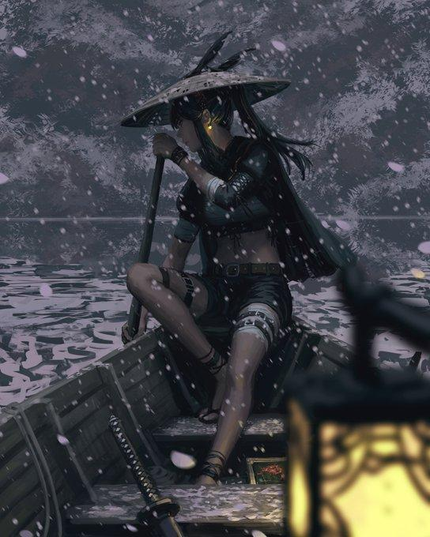
"There are black zones of shadow close to our daily paths,
and now and then some evil soul breaks a passage through.
When that happens, the man who knows must strike before
reckoning the consequences...”
---H.P. Lovecraft, "The Thing on the Doorstep"
The Ghosts of Onigawa is a non-profit fan-made expansion set designed by the Arkham.cards team to be compatible with Arkham Horror: The Card Game by Fantasy Flight Games. The Ghosts of Onigawa Campaign Expansion contains eight scenarios which form a campaign for 1-4 players. Each of these scenarios may also be played on its own in Standalone Mode.
Additional Rules and Clarifications ............................ 2
Campaign Setup ............................................................. 4
Prologue ........................................................................... 5
Scenario I: The Hidden Village ................................... 3
Interlude I: The Pale Bride ........................................... 8
Scenario II: The House on the Hill ............................ 9
Interlude II: The Other Twin .................................... 12
Scenario III: The River Delta ..................................... 13
Scenario IV: The War Eternal ................................... 17
Scenario V: Half Light ................................................. 20
Scenario VI: The End of August ............................... 24
Interlude III: Sweet Release ....................................... 26
Interlude IV: The Queen's Gambit .......................... 28
Scenario VII: The Molten Armory ........................... 30
Scenario VIII: The Black Harvest ............................. 33
Epilogue ......................................................................... 38
Design Notes ................................................................. 41
Credits & Acknowledgments ..................................... 41
Campaign Log ............................................................... 42
Quick Reference ........................................................... 44
The cards in The Ghosts of Onigawa expansion set can be identified by this symbol before each card's collector number:
Additional Rules and Clarifications
During this campaign, the investigators may encounter other survivors investigating the ghosts of Onigawa. One such survivor is Mayu Tachibana. As a result, she may not be chosen for use as playable investigator for any scenario in this campaign.
A scenario in this campaign uses frost () tokens. You will need eight tokens to play this campaign. For more details on token mechanics, see page 23.
Bless, Curse, and Harmony Tokens
A scenario in this campaign uses bless () and curse () tokens and introduces a new type of chaos token: harmony () tokens.. You will need eight , eight , and eight tokens to play this campaign. For more details on , , and token mechanics, see page 34.
This campaign introduces permanent story assets with printed health and/or sanity values. These assets may be assigned non-direct damage and/or horror as normal, but because they cannot leave play, they are not discarded when their total assigned damage and/or horror equals their printed health and/or sanity values.
Like other assets, permanent assets may not be assigned damage and/or horror in excess of their printed health and/or sanity values. All damage and horror assigned to a permanent asset is removed at the end of each scenario.
Some locations in this campaign have a haunted ability. These locations may be collectively referred to as "haunted locations."
After an investigator fails a skill test while investigating a location, that investigator must resolve that location's haunted effect.
Advantage is a new keyword in this campaign, utilized on some enemy cards to represent the burdens associated with contending with those enemies.
Enemies with the advantage keyword may collectively be referred to as "advantaged enemies." When an advantaged enemy becomes engaged with an investigator, that investigator must immediately resolve its advantage effect, if able.
Some enemies in this campaign have the alert keyword. Each time an investigator fails a skill test while attempting to evade an enemy with the alert keyword, after applying all results for that skill test, that enemy performs an attack against the evading investigator. An enemy does not exhaust after performing an alert attack. This attack occurs whether the enemy is engaged with the evading investigator or not.
Ambush is a new keyword in this campaign, utilized on some enemy cards to represent those enemies' ability to take the investigators by surprise.
Enemies with the ambush keyword may collectively be referred to as "ambushing enemies." When a ready ambushing enemy becomes engaged with an investigator, it immediately makes an attack against that investigator.
Hunter X is a new update to the hunter keyword. Enemies with the hunter X keyword will move up to X locations towards the nearest investigator during the "enemies move" step of the enemy phase.
Some enemies in this campaign have the patrol keyword. During the enemy phase (in framework step 3.2), each ready, unengaged enemy with the patrol keyword moves to a connecting location along the shortest path toward the designated target (as described in parentheses next to the word “patrol”).
If there are multiple targets that qualify as the
designated target, the lead investigator may choose which
target the enemy moves toward.
If an enemy with patrol would be compelled to move to a
location via a path that is blocked by a card ability, the
enemy does not move.
Protected is a new keyword in this campaign, utilized on some enemy cards to represent those enemies' invulnerability to conventional attacks.
Enemies with the protected keyword may be referred to collectively as "protected enemies." Protected enemies cannot engage investigators or become exhausted and are immune to all investigator actions and player card effects. Typically, scenario cards or story assets will provide investigators with the means to remove the protected keyword from protected enemies or provide alternate methods to reach a resolution.

Revenge is a new keyword in this campaign, utilized on some enemy cards to represent a consequence (or reward) associated with defeating the enemy.
Enemies with the revenge keyword may collectively be referred to as "revenging enemies." When a revenging enemy is defeated by an investigator, that investigator must immediately resolve its revenge effect, if able. Effects that cause a revenging enemy to be discarded (rather than defeated) do not trigger that enemy's revenge effect.
To set up The Ghosts of Onigawa campaign, perform the following steps in order:
1. Choose investigator(s).
2. Each player assembles their investigator deck.
3. Choose difficulty level.
4. Assemble the campaign chaos bag.
Easy (I want to experience the story):
+1, +1, 0, 0, 0, –1, –1, –2, –3, , , , , ,
Standard (I want a challenge):
+1, 0, –1, –1, –2, –2, –3, –3, –4, , , , , ,
Hard (I want a true nightmare):
0, 0, –1, –1, –2, –2, –3, –4, –5, , , , , ,
Expert (I want Arkham Horror):
0, –1, –1, –2, –2, –3, –3, –4, –5, , , , , ,.
You are now ready to begin at the Prologue.
Arkham, August
It has been a very cruel summer. This awful heat wave currently ravaging Arkham has already claimed a record number of lives, and the rest of the city's denizens are getting by solely on the basis of their own ingenuity; as I write this, a group of urchins have managed to hack away at a fire hydrant on the corner, and their joyous laughter as they frolic beneath the spraying font is soothing balm for my parched soul in itself. No doubt the authorities will arrive shortly and insist they must burn to a crisp like the rest of us. For my part, I've found it increasingly difficult to sleep in these conditions, much less get any actual work done, and so I've decided to take an impromptu vacation, of sorts. For years I have corresponded with a man named Takeshi Harada. We worked together, briefly, in a past life, and I have always found him to be a decent and forthright man. He has written to me often about the idyllic life he has cultivated in the halcyon hamlet of Minakami Village in the years since his "retirement," extolling the virtues of his simple country life. Indeed, Minakami is apparently so remote and so removed from the affairs of the world that it has not been depicted on any maps of the region I have managed to come across. Nevertheless, Takeshi has frequently bid me to come and visit him, and it seems the time has finally arrived for me to take him up on his offer. I expect I may remain there through autumn at the very least, and so I have spent most of the day packing as much of my life into my luggage as I can manage. I'm sure Takeshi will make light of my excessive "baggage," but he knows how I get when my mind remains idle for too long---besides, you never know what might come in handy. Alas, there's no direct transport to Minakami, but Takeshi has agreed to meet me at the nearest station and escort me back to the village. I depart at first light.
Proceed to Scenario I: The Hidden Village.
Scenario I: The Hidden Village
Minakami Village, August
Intro 1: I loitered around the station for several hours, but Takeshi never showed. I assumed he must have forgotten---or perhaps their attitudes towards time in Minakami are "unconventional"---and resorted to becoming my own guide.
Eventually, I did manage to find my way to Minakami on my own, thanks in no small part to the descriptions of various landmarks in the letters Takeshi had sent me over the years, including the enormous red archway spanning the dirt road leading to the village which he referred to as "the gate."
When I arrived at his home, there was no sign of my friend. With no small amount of effort I was able to inquire regarding his whereabouts with some of the locals. I'm not sure if they were distrustful of me because I was an outsider or were simply reluctant to burden me with the truth: Takeshi is dead.
About a week ago, he was found unresponsive along the outskirts of the village; there were visible bruises around his neck, apparently, but no other evidence explaining what had transpired. Seeming content to declare his death an "accident," the villagers have already buried him, making any further assessment of his body rather difficult. In such a remote place, competent medical practitioners are difficult to come by, I suppose.
Some of the locals I questioned about the affair also spoke to me, in murmured whispers, about some sort of "curse," mentioning that a pair of young girls went missing from the village a few days later. As far as I can surmise, they had no connection to Takeshi, and so I imagine they will return home once they grow hungry enough.
It seems Minakami's remoteness is not lost upon the townsfolk; several people I spoke to made oblique references to the "hidden village". Suffice it to say, the villagers appear to be a highly superstitious lot, though their hospitality during this strange visit has been satisfactory. I see why Takeshi spoke so fondly of this place; despite the circumstances, it is quite breathtaking.
They tell me they erected a small cairn marking Takeshi's grave in the forest near where his body was found. Tomorrow, I go to my pay my respects before I gather my belongings and return to Arkham. It's the least I can do to honor the memory of my late friend...
Proceed to Scenario Interlude: The Forest Guardians.
Scenario Interlude: The Forest Guardians
Interlude 1: The next morning, you find yourself lingering at the edge of the thick forest on the outskirts of the village. A simple stone path ushers you into its heart, revealing an expansive grove of shrines and grave markers. A heavy silence hangs in the air; no birdsong or breeze disturbs the tranquility of these woods. Before you, a large red gate stands ominously in the distance. You become somewhat disoriented by the unnatural quiet as you stare at it, and wander off the path into a secluded grotto. Within, a small pool of water is flanked by a series of shrines, each adorned with a stone statue depicting some sort of animal spirit. Your fingers absently graze the edges of a coin jangling in your pocket, which you don't remember having put there. Perhaps you should make an offering? But to which...?
Gather the four Aspect story assets from the Guardians of
Minakami encounter set. This set is indicated by the
following icon:
You may optionally gather the four Aspect story assets
included in the Return to the Ghosts of Onigawa
supplemental set as well, indicated by the following icon:
or compose your own pool of available Aspects.
Shuffle the gathered cards and place each card face down
separately in the play area, and then proceed to the
relevant section below.
If you are playing this scenario as part of a campaign on Easy or Standard difficulty: You carefully inspect each of the shrines, studying the creatures intensely before making your selection...
Reveal each of the gathered cards.
In player order, starting with the lead investigator, each
investigator must choose one of the remaining Aspect
cards and add it to their deck. It does not count against
your deck limit.
Remove any unchosen cards from the game. They will
not be used during the campaign.
Proceed to Scenario Interlude: A Blessing in Disguise.
If you are playing this scenario in standalone mode or as part of a campaign on Hard or Expert difficulty: Takeshi would surely be pleased to learn his death had disturbed you sufficiently to consider humoring such primitive superstition, even momentarily. Best to just pick one and move on; no need to think too hard about it...
In player order, starting with the lead investigator, each
investigator must randomly choose one of the remaining
face down cards, reveal it, and then add it to their deck. It
does not count against your deck limit.
Remove any unchosen cards from the game. They will
not be used during the campaign.
Proceed to Scenario Interlude: A Blessing in Disguise.
Scenario Interlude: A Blessing in Disguise
In player order, starting with the lead investigator, each investigator must read aloud the section below that corresponds with the Aspect story asset that they added to their deck.
Perched atop one of the shrines, a gloomy raven catches your gaze. Incidentally, it appears to be missing its left eye; a battle scar, perhaps? While certainly more noble than the common crows that menace Arkham, the familiar sight reminds you of home. Surely, that is worth a coin...
A proud stag bows before you, its antlers unfolding to perfectly frame the shrine behind it. Its pure white coat strikes you as regal somehow, and you feel as if you are being ushered into the creature's kingdom. Appropriate that you should pay a sovereign his tithe, you think, as you place your coin upon the altar...
You swear that you can hear a howl echoing in the distance as you regard the large wolf flanking one of the shrines. Its face and torso appear to be colored with an elaborate design, evocative of war paint. You tuck your coin into its offering box quickly; the idea of such a creature watching over you does make you feel safer, somehow...
A jolly-looking creature resembling a raccoon lazily reclines on the eaves of the shrine before you. You smile as you look him over. He sits atop a giant rucksack---filled with plundered loot, you presume. With a satisfying clink you drop your coin in the offering box below him, ensuring his treasury grows even larger...
Once each investigator has read a section, proceed to Setup.
Seated upon a stone lilypad at the base of one of the shrines is an enormous toad. The crown it wears suggests imperial authority, and its seat does remind you of a throne, but its kingdom is apparently desolate. No retainers or concubines flock to the side of the monarch; he sits in repose, all alone. Perhaps a "tribute" may yet restore his dignity... or yours.
Among the foliage you detect a "hidden" shrine, and, within the overgrowth, a proud leopard gazes warily across the grotto. Its mouth hangs slightly agape, as if it means to speak, but you suspect those sharp fangs know one only "language." You meekly offer your coin in the hopes you might be spared the huntress's cruel "lessons" today...
A playful fox wraps its nine tails around one of the shrines nearest to you. Its fur is etched with arcane symbols---some manner of runes or glyphs, you imagine---but are they meant to empower the creature, or bind him? He looks friendly enough, and it wouldn't be the first time you've spent coin to obtain some companionship...
A forlorn-looking stork-like creature casts about in a pool of water collecting at the base of one of the shrines. There is certainly no food for him to be found within the shallow waters, and yet he stares intently into his own reflection. The mirror image stares back, somehow shrouded in the ethereal gloom of spectral wisps dancing around the shrine... Maybe he, too, lost a friend, once. A coin seems like paltry recompense, but it's the best you can do...
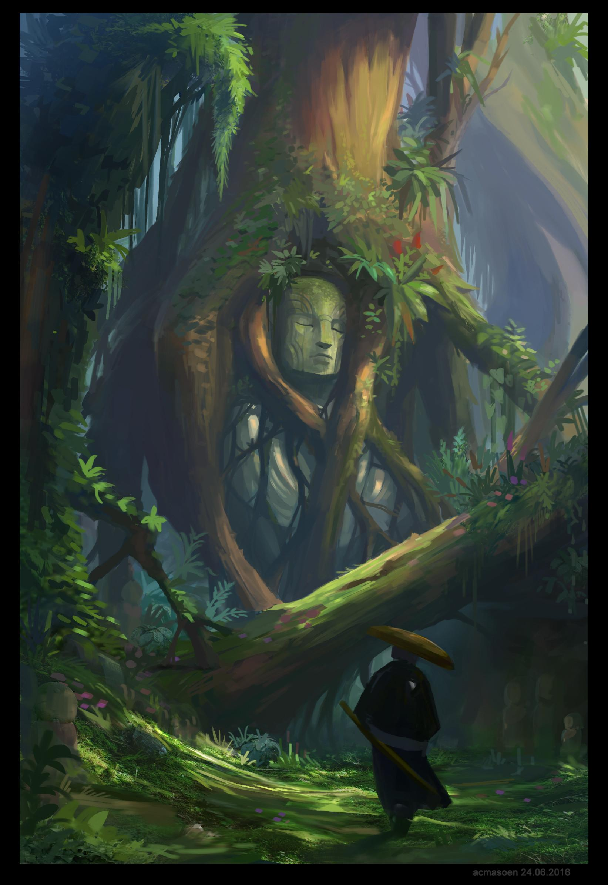
If you are playing this scenario in Standalone Mode, use the following conditions while setting up this scenario:
Assemble the chaos bag with the following tokens:
0, 0, –1, –1, –2, –2, –3, –4, –5, , , , , ,.
Remove all copies of The Woman in the Fog
treachery card from the game.
Remove all Aspect story assets from each
investigator's deck at the end of this scenario.
Gather all cards from the following encounter sets: The
Hidden Village, Cruel Corvids, Fearsome Fog, and Forest
Frights. These sets are indicated by the following icons:
Put the Forest Threshold, Grotto of the Guardians, and
Torii Gate (Forlorn, Forgotten) locations into play, revealed.
Investigators begin play at Grotto of the Guardians.
Put each Verdant Copse location into play, unrevealed.
Shuffle the three Untended Graves locations together and
attach them facedown to the scenario card.
Set each other location, the Fearsome Fog encounter
set, and The Crimson Butterfly and Vengeful Echo enemies
aside, out of play.
If any investigator's deck contains The Sly Bandit (Blessing
of the Tanuki) story asset, that investigator begins this
scenario with 1 additional resource.
If any investigator's deck contains The Restless Widower
(Blessing of the Heron) story asset, that investigator begins
this scenario with 1 fewer resource.
Shuffle the remaining encounter cards to form the
encounter deck.
You are now ready to begin.
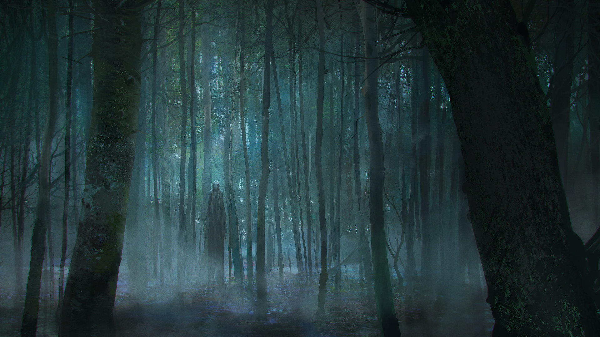
If no resolution was reached because each investigator was defeated: You awaken some time later. In the dark heart of the forest, you can barely discern the familiar red arches of the Torii Gate looming over you. A crimson butterfly floats past your shoulder and into the archway...and vanishes from sight. Suddenly, with a deafening roar, a yawning red portal snaps open between the archway. On the other side, you can see a rustic village bathed in the light of a full moon overhead. You fall back onto your heels and crane your neck to get a better look but are pushed from behind by an unseen assailant, and tumble into the shimmering expanse...
In your Campaign Log, record the investigators were
abducted and brought to the hidden village.
Each investigator earns experience equal to the
combined Victory X value of all cards in the victory
display. Do not spend your experience yet.
Proceed immediately to Interlude I: The Pale Bride.
Resolution 1: You swallow nervously as you hover at the edge of the shimmering portal. There's no way to know where it's going to take you, but the menacing revenants now stalking the woods leave you little choice. You reach a tentative hand into the portal, disturbing the image of a full moon in a starry sky. The Crimson Butterfly seemed to be leading you here for a reason...
In your Campaign Log, record the investigators
discovered the hidden village.
Each investigator earns experience equal to the
combined Victory X value of all cards in the victory
display. Do not spend your experience yet.
Each investigator earns 1 additional experience as
their insight into the mythos deepens.
Proceed immediately to Interlude I: The Pale Bride.
Interlude I: The Pale Bride
If any investigators ended the previous scenario with
at least one hidden encounter card in their hand,
reveal them and proceed to Interlude 1.
Otherwise, investigators may now spend their experience,
and skip to Scenario II: The House on the Hill.
Interlude 1: Just before you pass through the portal, your mind is filled with thoughts of the mysterious woman you thought you saw in the fog earlier. It was easier to believe your mind was simply playing tricks on you before, but now, with everything you've seen...you're certain she was real. Could she be involved with Takeshi's death? Or the missing girls the villagers spoke of? You sense answers aren't going to be easy to come by, but there's no turning back now...
In your Campaign Log, record the investigators have
been marked by The Pale Bride.
Each investigator who caught a glimpse of The Pale
Bride earns 1 additional experience as their insight into
the mythos deepens. Investigators may now spend their
experience.
Proceed to Scenario II: The House on the Hill.
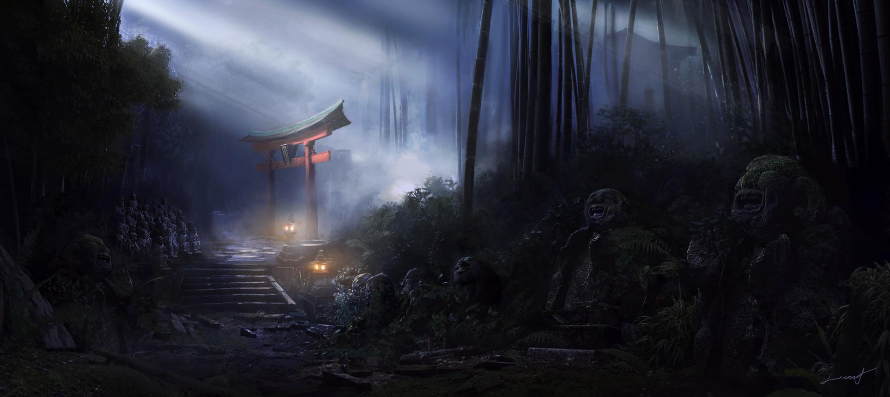
Scenario II: The House on the Hill
Intro 1: An inky blackness envelops you as you pass through the portal, dragging you down into a place of utter darkness. The first sensation you become aware of is a searing red light burning your retinas and a haunting cacophony of mad whispers that seem to come from everywhere and yet nowhere. You attempt to squeeze your eyes shut to block out the blinding light...but to no avail. When you do finally open your eyes again, you find yourself standing on a stone path at the top of a small hill that looks out over a decrepit village. The full moon hanging ominously large in the night sky casts its pale light across the darkened village; if there are any people currently occupying these decaying structures, you can observe no evidence of them...
Nervously, you glance backwards over your shoulder and notice that the Torii Gate that brought you here remains, but something about it has changed; the peeling paint and rotten wood has been renewed as if time itself had unwound, restoring it to what must have been its original, pristine luster. Suddenly, a high-pitched shriek rings out in the distance, and your gaze is drawn to a large palatial structure sitting atop an overlook on the edge of the town. When your heartbeat finally settles, you find your thoughts lingering on the missing girls the villagers had told you about; could they have accidentally traversed the portal as you did, while innocently playing in the forest...?
If Yuki Yagami is one of the investigators in the campaign,
proceed to Scenario Interlude: Deadly Premonition.
Otherwise, skip to Intro 2.
DO NOT READ UNLESS INSTRUCTED
Scenario Interlude: Deadly Premonition
The investigator playing Yuki Yagami must read this section, in secret: You find your breath growing shallow as beads of sweat form at your brow. There's something about this place that unsettles you, though you can't quite put your finger on it; somehow, you know the girls are here and that they are in grave danger. You have to save them.
You have to...
You begin this scenario with The Succession (That August Night) in play.
Proceed to Intro 2.
Intro 2: Swallowing hard, you take a moment to weigh your options; the gate's portal might return you to safety, but as you contemplate retreating to Minakami and alerting the villagers as to what has transpired, the portal snaps abruptly shut---as if in response to your hesitancy---stranding you on the far side...
If the investigators have been marked by The Pale Bride,
proceed to Intro 3.
Otherwise, skip to Setup.
Intro 3: You nervously rub your neck as a phantom tightness swells in the back of your throat. Paranoid thoughts begin to race through your mind regarding the woman in the fog... What does she want? Did she bring you here? ...Does she know you?
Each investigator begins this scenario with 1 additional horror assigned to their investigator.
Proceed to Setup.
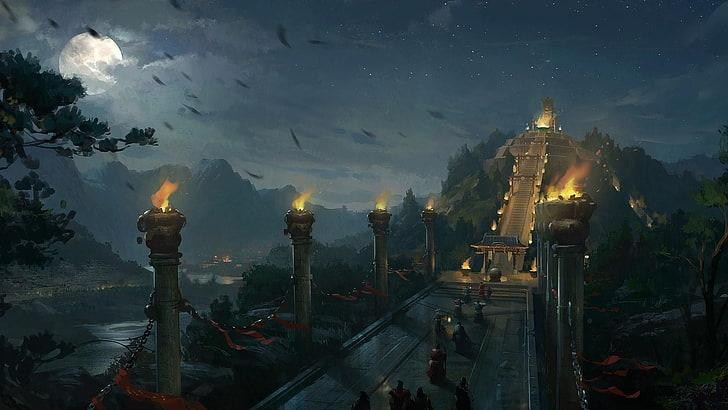
Gather all cards from the following encounter sets: The
House on the Hill, Darkened Manor, Downwell, Memories of
Mayu, and Moonlit Madness. These sets are indicated by the
following icons:
Set the Darkened Manor, Downwell, and Memories of Mayu
encounter sets and the Shishio's Guile (Guise of the Baleful
Retainer) story asset aside out of play.
Put the Torii Gate (Former Glory), Village Square, and
Darkened Manor locations into play, unrevealed.
Investigators begin play at Torii Gate (Former Glory).
Shuffle the five remaining Village locations together and
put them into play face down, attached to the scenario card,
as a separate explore deck.
If any investigator's deck contains The Restless Widower
(Blessing of the Heron) story asset, that investigator begins
this scenario with 1 clue.
If any investigator's deck contains The Blind Warden
(Blessing of the Karasu) story asset, that investigator begins
this scenario with 1 additional damage assigned to their
investigator.
Shuffle the remaining encounter cards to form the
encounter deck.
You are now ready to begin.
If you are playing this scenario in Standalone Mode, use the following conditions while setting up this scenario:
Setup the chaos bag with the following tokens:
0, 0, –1, –1, –2, –2, –3, –4, –5, , , , , ,.
The investigators were marked by The Pale Bride.
Gather the Guardians of Minakami encounter set.
Each investigator must randomly add 1 of the
included Aspect cards to their deck for the duration of
this scenario. It does not count against your deck
limit.
Scenario Interlude: The Girl in the Well
Interlude 1: You peer into your own reflection within the well, but your visage slowly vanishes as the pool turns dark. Without warning, a grey hand lunges out from the black fluid and begins to flail wildly in the air. The shock sends you tumbling backwards and you climb back onto your knees just in time to see a shriveled palm grasp the edge of the well, hauling itself up from the fetid depths. Long, dark, tangled hair is plastered to the creature's head and face by the liquid, concealing its countenance as it noiselessly mantles over the stonework and slithers onto the ground. You attempt to squirm backwards and gain some distance, but in an instant it is upon you. A sinister, toothy grin flashes from within the shadowed recess. You swallow hard, blink...and she's gone.
In your Campaign Log, record the investigators unleashed
The Maiden of the Black Water.
Each investigator must take 1 horror.
Add The Girl in the Well treachery to the victory display.
If no resolution was reached because each investigator was defeated: You awake on the outskirts of the village, once more under the looming shadow of the gate. The Crimson Butterfly skates into your periphery, causing you to sit up with a jolt. It makes a beeline across the stone path, darting off into the tall grass nearby, banking into an orbit and hovering above the overgrowth, as if beckoning you. As you carefully climb to your feet and approach its position, you begin to discern the outline of a matted patch of weeds below the creature, pressed into an indiscernible shape...
And then you see her. A dark-haired young girl lies motionless in the grass, illuminated by the pale red light. Her eyes are empty and her face is expressionless. You can tell she isn't breathing, and the fresh bruises around her neck tell you everything you need to know. You watch her body grow cold for a long while, as a gentle breeze rustles the tall grass surrounding the patch of earth where she lays, perfectly still...
In your Campaign Log, record Mayu was slain in the
hidden village.
Each investigator earns experience equal to the
combined Victory X value of all cards in the victory
display. Do not spend your experience yet.
Proceed immediately to Interlude II: The Other
Twin.
Resolution 1: The apparition barely seems to notice your attempts to interfere with the ritual; her attention---and phantom limbs---remain fully transfixed upon the young girl writhing beneath her grasp. Eventually, the banshee relents and, after a piercing shriek, releases the young girl and dissolves into misty aether. The girl spasms and coughs, as if choking, while desperately clawing at the dark bruises on her neck; its clear she urgently needs medical attention. You hastily elect to gather the girl into your arms and dash out of the manor as fast as your feet can carry you. You can feel the girl's fingernails digging into your forearm as you run, but by the time the torii gate is in sight, her body has gone limp in your arms...
In your Campaign Log, record Mayu was slain in the
hidden village.
Each investigator earns experience equal to the
combined Victory X value of all cards in the victory
display. Do not spend your experience yet.
Proceed immediately to Interlude II: The Other
Twin.
Resolution 2: You hoist the girl's body onto your back and swiftly carry her out of the mansion. She doesn't stir in your arms as you retrace your steps back to the gate, but the soft rising and falling of her chest against your back lets you know she's still alive. As you approach the gate, you feel her begin to spasm and moan, as if struggling against a nightmare, and so you gently set her down on the stone walkway to get a better look at her; the bruises on her neck have already begun to vanish and she appears to have suffered no other physical wounds. Suddenly, her eyes snap open...
"You..." she murmurs, "...You saved me?"
As you tentatively nod, her lips squirm into a bitter smile and a solitary tear glides down her ruddy cheek.
"Thank you so much..." she continues, "I'm Mayu. Mayu Tachibana..."
In your Campaign Log, record the investigators rescued
Mayu from The Pale Bride.
Each investigator earns experience equal to the
combined Victory X value of all cards in the victory
display. Do not spend your experience yet.
Proceed immediately to Interlude II: The Other
Twin.
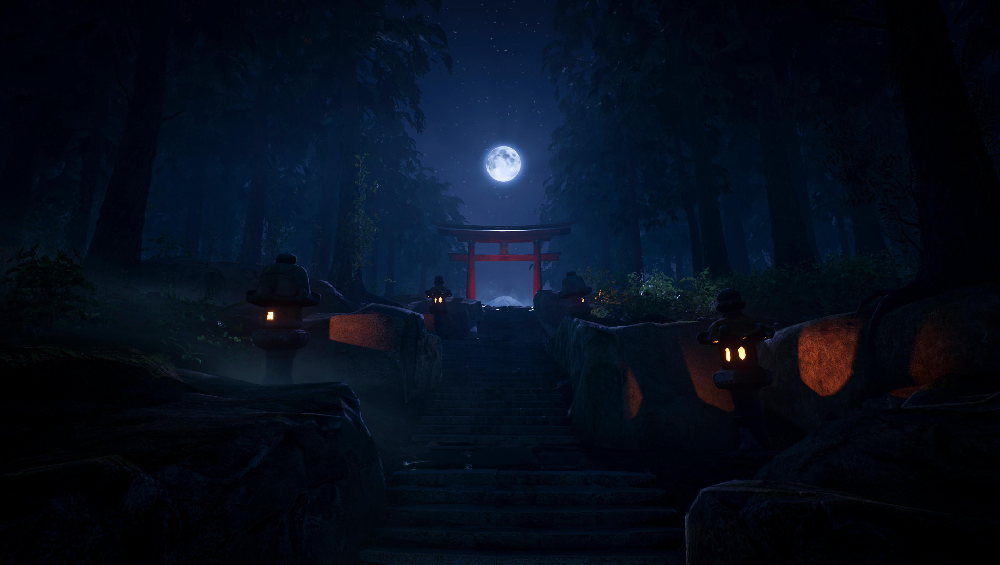
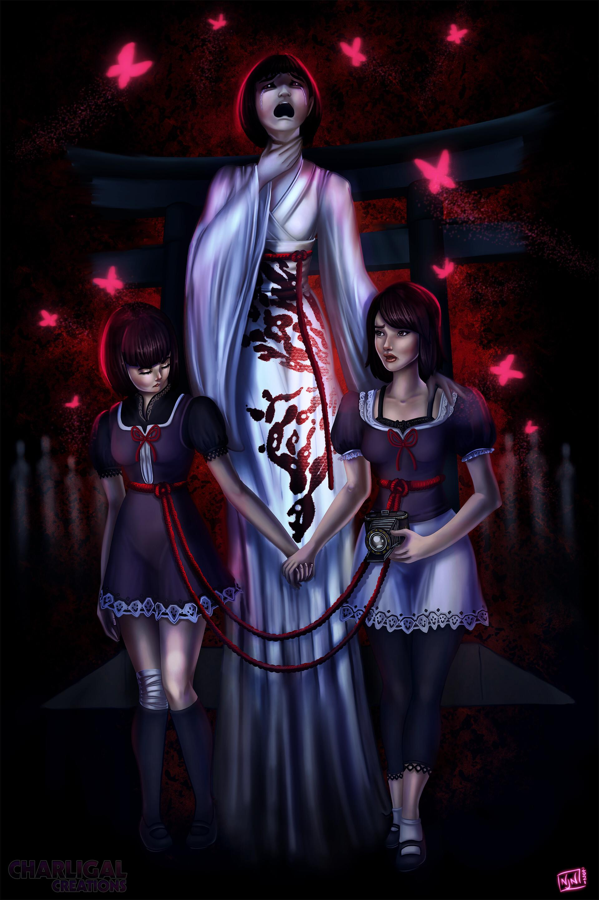
Interlude II: The Other Twin
Check the Campaign Log.
If Mayu was slain in the hidden village,
skip to Interlude 4.
Otherwise, proceed to Interlude 1.
Interlude 1: You introduce yourself to the girl and relay an abridged version of the events that brought you to the hidden village. Despite the bizarre occurrences contained with your story, she seems strangely credulous of the tale, almost as if she had experienced something similar. She politely thanks you again for coming to her aid, but, as you help her to her feet, you notice her worried gaze is fixated on something over your shoulder. You look back and smile at the familiar sight hovering towards you: The Crimson Butterfly. On ruby wings it glides between you, and, as before, it passes through the red archway, causing the howling portal to reopen before your very eyes. Beyond its starry expanse, day breaks over the forest. Your weary body instinctively draws itself towards the threshold, but tiny fingers grasping at your hand break you from your reverie...
"No, we can't go back!" Mayu cries. You already know what's coming before she even speaks the words...
"Not until we find my sister, Miyu!"
The investigators must decide (choose one):
Send Mayu back to the village and look for Miyu alone.
Proceed to Interlude 2.
Continue the search for Miyu with Mayu's help.
Skip to Interlude 3.
Interlude 2: Whatever is going on here, it's far too dangerous for a child. You explain to Mayu that you couldn't guarantee her safety, and that her continued presence here would only put the both of you at greater risk; it would be faster---and safer---for you to search for her sister on your own. Mayu's brow furrows and she opens her mouth as if to protest, but then swallows hard and looks away sadly before nodding.
"I understand..." she murmurs, "Thank you so much for everything you've done..."
You direct Mayu to inform the villagers about what has transpired as you lead her to the portal. Before she steps through, she turns back to regard you one last time.
"Promise me..." Mayu stammers through tears, "Promise me you'll bring Miyu back to me!"
You nod solemnly and watch Mayu disappear through the archway...
In your Campaign Log, record the investigators made a
promise to Mayu.
Each investigator gains one additional experience as their
insight into the mythos deepens. Investigators may now
spend their experience.
Skip to Scenario III: The River Delta.
Interlude 3: You're hesitant to place Mayu in harm's way, but you suspect her insight and experience may be crucial to figuring out what has become of her sister, so you begrudgingly agree to let her accompany you while you search for signs of Miyu, against your better judgement.
"Thank you..." she whispers, offering a deep bow in gratitude, "Thank you so much. I promise I won't be a burden!"
Mayu smiles for the first time since she awoke; her relief is palpable.
In your Campaign Log, record the investigators let Mayu
assist with the investigation.
One investigator must add the Mayu Tachibana (The
Elder Twin) story asset to their deck. It does not count
against their deck limit. If this investigator leaves the
campaign, immediately transfer this story asset to a
remaining investigator.
Investigators may now spend their experience.
Skip to Scenario III: The River Delta.
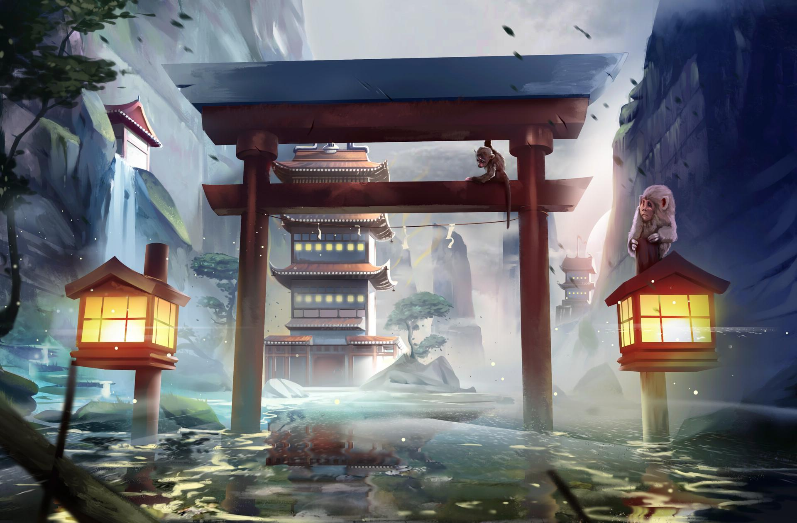
Interlude 4: When you eventually work up the nerve to take a closer look at the girl's body, you notice a silver bracelet on her wrist. Inside there's an inscription: "To Mayu, the best big sister in the whole wide world. Love, Miyu." The trembling in your arm ceases as your resolve is bolstered; it's too late to help Mayu...but her sister is still out there, somewhere. You don't have the tools or the time to give Mayu a proper burial, but maybe you can still save her sister. You may not have any leads, but you do have a name, now: Miyu. That's something, at least...
In your Campaign Log, record the investigators resolved to
find Miyu.
Each investigator must add one copy of the Memories of
Mayu story weakness to their deck.
Each investigator gains one additional experience as their
insight into the mythos deepens. Investigators may now
spend their experience.
Proceed to Scenario III: The River Delta.
Scenario III: The River Delta
Intro 1: With few leads to go on, you decide to canvas the village once more and search for signs of Miyu. Before you set out, you inspect Mayu's effects to see if she had anything on her that might help shed some light on the matter...
Check the Campaign Log.
If the investigators let Mayu assist with the investigation,
proceed to Intro 2.
Otherwise, skip to Intro 3.
Intro 2: Mayu produces a curiosity from her pack and gingerly offers it to you. "I found this in the mansion while I was looking for Miyu...just before that thing found me." You turn the object over in your hands; It looks ancient, but gives off a soft warmth, as if thrumming with power... "I think it's a camera...?"
One investigator must add the Camera Obscura (Curious
Keepsake) story asset to their deck. This does not count
against your deck limit. If this investigator leaves the
campaign, immediately transfer this story asset to a
remaining investigator's deck.
Skip to Intro 4.
Intro 3: In Mayu's leftover knapsack, you discover an artifact that superficially resembles an old camera, but with no obvious filament or shutter controller you can't figure out how it's meant to capture an image. You wonder if Mayu brought it with her when she and her sister transited the portal or if she found it in the village, but now there's no way to know. It's probably broken, but you feel like you better hang on to it, just in case...
One investigator must add the Camera Obscura (Curious
Keepsake) story asset to their deck. This does not count
against your deck limit. If this investigator leaves the
campaign, immediately transfer this story asset to a
remaining investigator's deck.
Skip to Intro 5.
Intro 4: You decide it would be best to stick together as you search the village. As you walk, Mayu mentions that she was separated from her sister after they traversed the portal, and was also lured to the manor on the hilltop by the sounds of screams. You ask if she too received guidance from the Crimson Butterfly back in the forest, but Mayu insists the first time she saw the creature was when it appeared after she regained consciousness following your heroic rescue. After completing a circuit around the village, you find yourself standing outside the fishing shack by the river bank. The sound of wood creaking as it's gently battered by the tide beckons you inside, where you find what must be the harbormaster's makeshift office; the old wooden desk is filthy, covered in dust and what looks to be dried blood. Scattered across the surface are grimy documents containing strange runes you cannot decipher.
"Look!" Mayu shouts, as she shoves a piece of parchment into your hands. It looks to be a shipping manifest detailing the contents of a vessel departing the docks: bales of grain, some ore, tools...and a girl. Dark of hair. Young.
"...I think it's Miyu!"
If Yuki Yagami is one of the investigators in the campaign,
skip to Scenario Interlude: Jamais Vu.
Otherwise, skip to Intro 6.
Intro 5: You attempt a thorough search of the village, but after a few frantic hours find that you are no better off than when you started, and there is nowhere left to look now apart from the old fishing shack on the river bank. It's a long shot, you realize, but you're not ready to give up on Miyu yet. Inside the shack you find what must be the harbormaster's makeshift office; the old wooden desk is filthy, covered in dust and what looks to be dried blood. Scattered across the surface are grimy documents containing strange runes you cannot decipher. You peer over one of the cleaner looking pieces of parchment. It looks to be a shipping manifest detailing the contents of a vessel departing the docks: bales of grain, some ore, tools...and a girl. Dark of hair. Young. It slips from your hand as you realize Mayu matches the description... And, therefore, so does her twin sister.
If Yuki Yagami is one of the investigators in the campaign,
proceed to Scenario Interlude: Jamais Vu.
Otherwise, skip to Intro 6.
DO NOT READ UNLESS INSTRUCTED
Scenario Interlude: Jamais Vu
The investigator playing Yuki Yagami must read this section, in secret: A sharp pain glides across your scalp as your attention fixates on the mysterious runes scrawled on the paperwork. One, in particular, you can't help but notice repeats on nearly every single page. You recognize it, like somehow you've seen it before. You try to remember where, but...it hurts. You try and chase the memory through the pain, but it's gone. An empty hollow in your mind where the memory should be is all that remains now. You shudder; it takes all the willpower you can muster to avoid thinking about how accurately you match the girl's description...
You begin this scenario with 1 additional resource and 1 additional horror assigned to your investigator.
Proceed to Intro 6.
Intro 6: You step outside the fishing shack and walk out to the edge of the pier. Up and down the river, a variety of smaller settlements can be seen. The glare of the moonlight reflecting off of the water's surface is almost blinding; you can't make out much from this distance, but perhaps Miyu was taken to one of them. Below you, anchored to the dock by a length of fraying rope, a solitary fishing vessel remains, bobbing up and down on the surf...
Proceed to Setup.
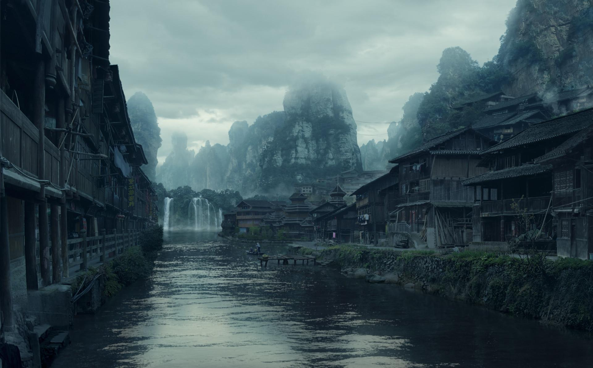
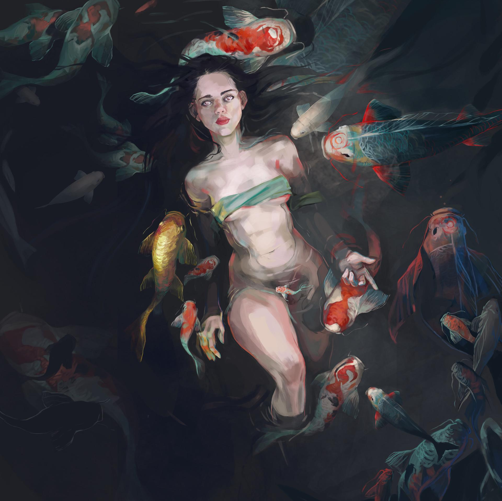
Gather all cards from the following encounter sets: The
River Delta, Cursed Conductors, Moonlit Madness, Tidal
Terrors, and Watery Woes. These sets are indicated by the
following icons:
Shuffle the six Uncharted Wetlands locations and put them
into play unrevealed, organized into two horizontal rows
containing three locations each.
Put the Fisherman's Wharf location into play unrevealed,
below the bottom-middle Uncharted Wetlands location.
Investigators begin play at Fisherman's Wharf.
Read The Tyrian Galley section below, then put The
Tyrian Galley (It Waits For Thee) story asset into play at
Fisherman's Wharf.
Set all other locations and the Watery Woes encounter set
aside out of play.
If any investigator's deck contains The Lonely Monarch
(Blessing of the Kaeru) story asset, that investigator begins
this scenario with 1 additional card in their opening hand.
If any investigator's deck contains The Penitent Sentinel
(Blessing of the Okami) story asset, that investigator begins
this scenario with 1 fewer cards in their opening hand.
Shuffle the remaining encounter cards to form the
encounter deck.
You are now ready to begin.
During this scenario, investigators have access to The Tyrian Galley, a small boat that will help them traverse the river. Once per turn, each investigator at The Tyrian Galley's location may use its printed Embark action to attach themselves to or detach themselves from The Tyrian Galley. If an investigator moves while embarked, except via The Tyrian Galley's printed Move ability, they must first detach from it, but when The Tyrian Galley moves, all investigators attached to it move with it.
If you are playing this scenario in Standalone Mode, use the following conditions while setting up this scenario:
Assemble the chaos bag with the following tokens:
0, 0, –1, –1, –2, –2, –3, –4, –5, , , , , ,.
The investigators made a promise to Mayu.
Gather the Guardians of Minakami encounter set.
Each investigator must randomly add 1 of the
included Aspect cards to their deck for the duration of
this scenario. It does not count against your deck
limit.
Scenario Interlude: The Damsel in the Deep
Interlude 1: Droplets of water tumble down your brow as vapor from the encroaching fog condenses against the warmth of your bare flesh. You gaze into the water, watching your reflection as you adjust your clothing in a half-hearted effort to conceal a few more inches of skin from the damp air. A bead of sweat stings your eye and forces you to look away, and when you look back into the mirrored surface of the river, the face staring back is no longer your own. Where your reflection once lay, a young, raven-haired woman now silently floats. A placid, relaxed expression hangs on her face as her vacant gaze stares through you, and a school of exotic fish swarm around her appendages. The creatures keep a respectful distance, allowing your eyes to wander across her glistening flesh. She is quite beautiful, but fortunately looks far too old to be Mayu's sister. You begin to imagine what horrific fate must have befallen the poor girl, that caused her to wind up as a drowned corpse bobbing down the river, when all of a sudden...she blinks. Your pulse quickens...
The investigators must decide (choose one):
Attempt to rescue the girl.
Proceed to Interlude 2.
Keep your distance.
Skip to Interlude 3.
Interlude 2: You instinctively reach out, desperately grabbing at the girl's forearm in order to pull her from the water. When your fingertips graze her pale skin, an icy chill begins to creep up your hand and the moisture on your palm begins to crystallize. You attempt to lift her up, but are met with surprising resistance; the painted fish close ranks and huddle closely to her, acting as a sort of counter-weight and concealing her entire body from sight. When you withdraw your hand and release the girl's arm to try and gain better leverage, the fish scatter again and reveal a wicked snarl on the girl's face. She glares at you for a moment before rolling her eyes; it seems she neither wants nor needs to be rescued. A tiny icicle on your fore finger melts as you rub your hands together and watch the girl float down the river, vanishing into the fog...
In your Campaign Log, record the investigators encountered
The Koi Princess.
Exhaust The Tyrian Galley and add The Princess's Retinue
treachery to the victory display.
Interlude 3: Something's not right here. A sense of foreboding washes over you as you tentatively watch the body being carried away by the current. The vanguard of fish remain at her side as she floats, as if guarding her from something. Whatever this...being is, your gut tells you it's dangerous. You think you can make out a smile on the girl's lips as she begins to sink back down into the depths of the water and disappears from your sight...
The investigators suffer no ill effects.
Add The Princess's Retinue treachery to the victory display.
If no resolution was reached because each investigator was defeated: You awaken atop a midden heap of soggy, bloated corpses. In disgust and horror, you recoil and clumsily tumble from the pile, landing hard on a wooden walkway below. Somehow, you seem to have washed ashore at a dingy pier, along with the other flotsam and detritus...
Above you, the fog parts, revealing a palatial fortress suspended between the sheer cliff walls of the ravine, perched high above the frigid river. Could this be Onigawa...?
You become aware of a presence somewhere behind you, but when you look out across the murky water you catch only a fleeting glimpse of a darkened specter standing atop a rickety wooden barge. The hollow clinking of coin echoes all around you, and the barge disappears behind a veil of mist...
In your Campaign Log, record the investigators paid
the toll to reach Onigawa.
Each investigator earns experience equal to the
combined Victory X value of all cards in the victory
display.
Proceed to Scenario IV: The War Eternal.
Resolution 1: As you take in the majestic view of the fortress suspended between the sheer cliffs of the gorge, a wave of dread washes over your body. The swirling fog recedes, revealing a dock nestled at the base of the ravine, and beyond it, a steep path cut into the rock face, leading upward toward the structure. You carefully guide the galley into the port and cautiously disembark...
There are no signs of life in the immediate vicinity that you can discern, but as you scan the path ahead, a series of extinguished braziers begin to roar to life ahead of you. The flickering flames line the way, as if guiding you, and at the base of each brazier hangs a painted scroll, depicting a strange rune in beautiful caligraphy brush strokes. It resembles the symbols you saw in the Harbormaster's office back in the village...
Could this be Onigawa...?
In your Campaign Log, record the investigators
discovered the location of Onigawa.
Each investigator earns experience equal to the
combined Victory X value of all cards in the victory
display.
Proceed to Scenario IV: The War Eternal.
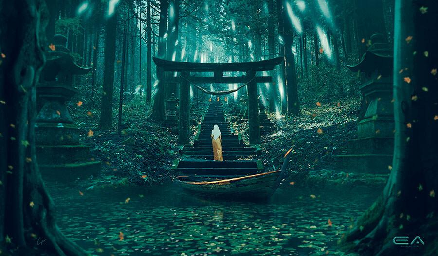
Scenario IV: The War Eternal
Check the Campaign Log.
If the investigators paid the toll to reach Onigawa,
proceed to Intro 1.
Otherwise, skip to Intro 2.
Intro 1: Your head pounds as you slowly find your feet. There's no sign of the phantom ferryman that seems to have brought you to shore, but after checking your---notably lighter---pockets, you are certain a fare was indeed extracted by the mysterious entity...
Each investigator begins this scenario with 1 fewer
resource.
Proceed to Intro 2.
Intro 2: Whatever this place is, you no longer seem to be in any immediate danger; the shabby dockyard is silent save for the sounds of the tide lapping against the edges of the pier and the crackling of the braziers lighting the path ahead of you, which appears to cut into the sheer cliff face of the gorge. The path ascends towards the fortress above you, barely occluding the massive moon in the sky...
Check the Campaign Log.
If the investigators let Mayu assist with the investigation,
proceed to Intro 3.
Otherwise, skip to Intro 4.
Intro 3: You cautiously approach the narrow stairway leading up the cliff and quickly find yourself wondering if scaling the gorge is actually going to bring you any closer to some answers. Behind you, Mayu gasps suddenly, and you whirl around, ready to defend her from whatever horrors may have tracked you to this place, but the adrenaline spike quickly subsides, leaving your poor nerves feeling even more frayed than before when you simply find Mayu crouched in the middle of the road, tentatively grasping at something buried in the dirt. You kneel down beside her, and she offers you her find: a grimy silver bangle. You turn it over in your hands for a moment, finding the piece of jewelry utterly unremarkable...until Mayu holds up her own wrist, which bears another just like it, though much less worse for wear.
"Miyu and I got each other matching ones for our birthday..." she murmurs as you rise to your feet. There's no need for anyone to say what you're all thinking; Miyu must be close by...
Skip to Intro 5.
Intro 4: You follow the dirt road away from the docks and make your way past the braziers. Taking a deep breath, you attempt to mentally prepare yourself for the no doubt harrowing ascent up the gorge that awaits you, when suddenly your foot catches on something in the dirt. You look down and notice a filth-covered protuberance sticking out of the mud. Eager for any distraction which might delay your death-defying climb, you crouch down and attempt to retrieve the object from where it lay discarded. At first glance, it appears to be a silver bangle, utterly unremarkable... At least, until you turn it over in your hands and catch a glimpse of the personalized inscription inside, and realize you've recently seen one just like it, adorning Mayu's wrist; the twins must have gotten matching bracelets... As you rise to your feet, you let the filthy piece of jewelry tumble from your fingers; you can't bear to hold onto it. Sentimentality is a luxury you can no longer afford; Miyu is close. You can feel it...
Proceed to Intro 5.
Intro 5: Could Miyu have intentionally left the bangle behind in the hope that someone would come for her? Clever girl, you think. You now know Miyu must have come this way---whether against her will or of her own accord, it makes no difference. There's nothing for it; the only way forward is up...
If Yuki Yagami is one of the investigators in the campaign,
proceed to Scenario Interlude: The Shadow of Onigawa.
Otherwise, skip to Setup.
DO NOT READ UNLESS INSTRUCTED
Scenario Interlude: The Shadow of Onigawa
The investigator playing Yuki Yagami must read this section, in secret: Your breathing grows shallow in the shadow of the fortress. You can hardly stand to look at it for some reason, but the thought of Miyu trapped there, terrified and alone, causes your blood to boil. Your eyes burn with righteous fury as latent power begins to awaken within you...
You begin this scenario with 1 additional card in your opening hand.
Proceed to Setup.
Gather all cards from the following encounter sets: The
War Eternal, Cruel Corvids, Deadly Doctrines, Ghostly
Grudges, Moonlit Madness and Siege of Onigawa. These sets
are indicated by the following icons:
Set the Siege of Onigawa and Ghostly Grudges encounter sets
aside out of play.
Put the Dismal Anchorage, Treacherous Gradient, and
Ravaged Gatehouse locations into play, unrevealed.
Investigators begin play at Dismal Anchorage
Set all other locations and The Crimson Butterfly (Blinding
Beacon) story asset aside out of play.
Read the Rally Deck section below, then shuffle the Deadly
Doctrines encounter set and put it into play face down,
attached to the scenario card as a separate rally deck. Do
not reveal any card in this deck until you are instructed.
If any investigator's deck contains The Penitent Sentinel
(Blessing of the Okami) story asset, that investigator begins
this scenario with 1 additional card in their opening hand.
If any investigator's deck contains The Sly Bandit
(Blessing of the Tanuki) story asset, that investigator begins
this scenario with 1 fewer cards in their opening hand.
Shuffle the remaining encounter cards to form the
encounter deck.
You are now ready to begin.
This scenario contains treachery cards with the new Doctrine trait. Doctrine treacheries typically act as "global modifiers" which affect a particular aspect of the scenario for all investigators, and may either help or hinder their progress, depending on the circumstances. In this scenario, Doctrine cards come into play via effects printed on scenario cards that cause the top card of the Rally deck to be put into play (and its printed Revelation effect to be resolved).
Because Doctrine cards are not ever drawn by a player (only put into play) they cannot be targeted or canceled by player cards such as Ward of Protection or A Test of Will.
Doctrine cards should never enter the encounter discard pile; they are not discarded after their printed effects are resolved. Revealed Doctrine cards remain in play until the next time the rally deck is shuffled by a scenario card effect. When this occurs, any revealed Doctrine cards should be shuffled back into the rally deck.
If you are playing this scenario in Standalone Mode, use the following conditions while setting up this scenario:
Setup the chaos bag with the following tokens:
0, 0, –1, –1, –2, –2, –3, –4, –5, , , , , ,.
The investigators made a promise to Mayu.
The investigators unleashed The Maiden of the Black
Water.
The investigators discovered the location of Onigawa.
Gather the Guardians of Minakami encounter set.
Each investigator must randomly add 1 of the
included Aspect cards to their deck for the duration of
this scenario. It does not count against your deck
limit.
DO NOT READ UNLESS INSTRUCTED
Scenario Interlude: Sealed Away
The investigator playing Yuki Yagami must read this section, in secret: You didn't want to mention anything before, but when you placed a hand on the ward barring entry to the palace...your hand passed through, undisturbed. It seems the ward "recognizes" you, like whatever spell was involved its construction was designed to let certain people pass through it. For some reason, you're reluctant to share this information with your companions, but you suspect it may come in handy later...
During your turn, your location is considered to be connected to Royal Palace (and vice versa.)
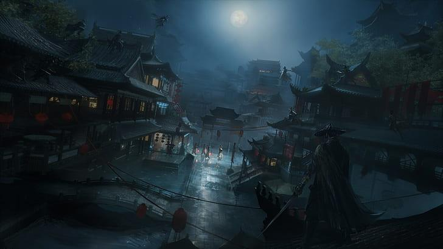
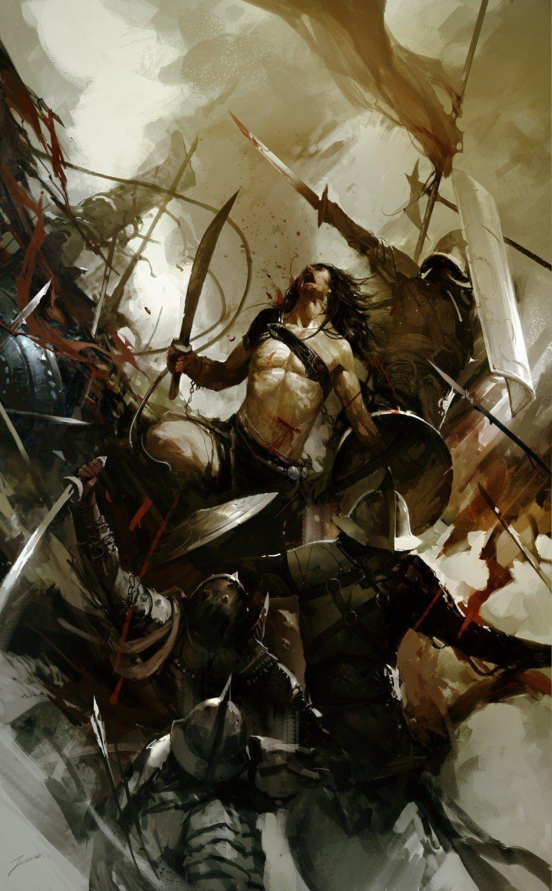
If no resolution was reached because each investigator was defeated: Try as you might to avoid becoming entangled in the ghostly conflict consuming the city, you inevitably find yourself surrounded by hostile forces. Outflanked and outmanned, you can do nothing but helplessly watch as the spectral warriors advance on your position...
The investigators must decide (choose one):
Woe to the conquered...
Skip to Epilogue I: The Ghosts of Onigawa (page
38). (Note: This will end the campaign.)
Deja vu...?
Read Resolution 2.
Resolution 1: You desperately seek refuge inside the palace and press your back against the barred gates, hoping the ghostly combatants outside are unable to pursue you any further. You remain frozen by the door for a long while, until the sounds of fighting outside die out...
In your Campaign Log, record the investigators
infiltrated the royal palace.
In your Campaign Log, record Champions of Onigawa
were laid to rest. Next to this, in parenthesis, record the
number of Elite enemies in the victory display.
Each investigator earns experience equal to the
combined Victory X value of all cards in the victory
display.
Proceed to Scenario V: Half Light.
Resolution 2: Suddenly, you notice the moon begins to shiver right before your eyes, vibrating back and forth in the night sky, vanishing behind one horizon, and immediately reemerging from the other. The light strobes between dawn and dusk for what seems like eternity before eventually settling at the same late hour it began at. You look down...and find yourself once again standing on the docks, warming in the light of the braziers by the dirt path. Strange, you think, but this is no time to daydream; Miyu must be around here somewhere. Time to check out that fortress...
The investigators must replay Scenario IV: The War
Eternal.
Reset the game to this scenario's Setup. Do not
record anything else in your Campaign Log except for
any trauma suffered from your previous game. Any
player whose investigator was killed or driven insane
must choose a new investigator to play.
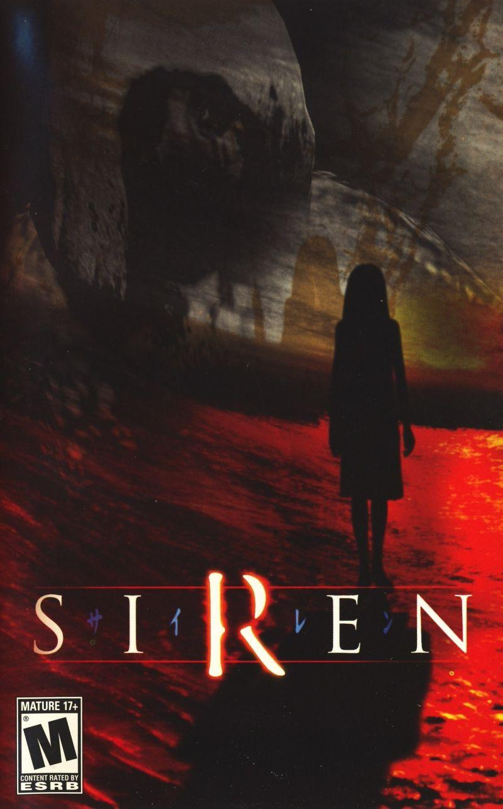
Intro 1: Some time later, you finally manage to peel yourself from the large wooden doors, with no small amount of reluctance. Whether the ward sealing the palace remains intact enough to thwart the advance of the ghostly warriors you encountered in the city or they simply found easier quarry to hunt, you can't rightly say, but, for the moment at least, it appears that you're out of immediate danger...
A series of lanterns hanging from the walls rustle in an unfelt breeze as you take in your surroundings for the first time: the palace, though well decorated, feels much smaller from the inside, somehow. Sliding paper doors lead to antechambers on either side of the entry hall, but every surface you can discern in the dim light is coated by a fine layer of dust. Cobwebs clutter the eaves and awnings of the structure's support pillars, and the long hallway ahead of you dead ends into a cramped passage which runs perpendicular to your field of view; you can't see any further beyond the entrance from your current position.
The Crimson Butterfly seems to have followed you inside, though, and you watch it flutter across through the room unevenly, seemingly exhausted by its earlier effort. Its red complexion bathes the walls in an unsettling light, and you're about to set off after it as it reaches the end of the hall and rounds the corner, disappearing from your sight...
...but a scream stops you dead in your tracks. It sounds much louder---and much nearer---than the one you heard back in the village. You begin to work up the courage to take a step when, suddenly, the lanterns in the room all suddenly extinguish, as if on cue, plunging you into utter darkness. The dwindling glow of The Crimson Butterfly lighting the hallway ahead of you is all the illumination your current vantage affords you. Once the scream's echoes have died down, a silhouette steps out from around the same corner and turns to to face you, standing motionless at the hallway's intersection. The Crimson Butterfly's light has all but vanished, and you can't make out too many details from this distance, but...it looks human. Short stature, long, dark hair, white robes; it's a girl, you think...
Check the Campaign Log.
If the investigators let Mayu assist with the investigation,
proceed to Intro 2.
Otherwise, skip to Intro 3.
Intro 2: You feel Mayu's breathing grow heavy beside you. You know what she's thinking, and you'd do anything to stop her from saying it aloud...but it's too late. She wants it to be true so badly, and the words have already left her soft lips...
The investigator with the Mayu Tachibana (The Elder
Twin) story asset in their deck may begin this scenario with
that asset in play.
Skip to Intro 6.
Intro 3: Your arm begins to tremble as your thoughts inevitably turn to Mayu...
Check the Campaign Log.
If Mayu was slain in the hidden village,
skip to Intro 5.
Otherwise, proceed to Intro 4.
Intro 4: You promised. You promised her you would find her sister, and now, for the first time since you found Takeshi's grave back in the forest, you feel hopeful that you're actually going to be able to do something you set out to do. That everything you've been through in this hellish place might have actually been for something. But well begun is only halfway done, you think, so you open your mouth, but the words catch in your throat...
Skip to Intro 6.
Intro 5: She was already dead by the time you even learned her name, but, at some level, you realize, you haven't ever actually stopped thinking about Mayu. You watched her for a long while before you left her cold body there in the grass, specifically so that you could commit every inch of her to memory, so you could spend the rest of your life torturing yourself about what happened. Could things have gone differently? You'll never know. But what you do know are the dimples in her soft, round face. Her upturned button nose, and pursed lips. Her empty eyes and her raven hair. You know her like the back of your hand now...and you'd recognize that silhouette anywhere. But then you remember that she's gone...and that you came all this way for one very specific reason.
Each investigator must search their deck for a copy of the
Memories of Mayu story weakness, set it aside, and then
shuffle their decks. After drawing starting hands for this
scenario (and taking any mulligans) each investigator must
put the set-aside weakness face down on top of their deck.
Proceed to Intro 6.
Intro 6: "Miyu?"
It's a wish as much as a question.
"...Is that you?"
The girl doesn't respond and darkness gathers around her as the remnants of The Crimson Butterfly's light fades away, the edges of the girl's silhouette vanishing into total blackness. Your heart pounds in your chest as the sounds of soft footsteps begin to grow nearer...
You begin to desperately search your pockets for anything that will shed some light on the situation, and, in the chaos, the camera you got from Mayu slips from your grasp. Miraculously, when it lands on one of its corners, it emits a mechanical clicking noise, and a blinding flash fills the room. As you shield your eyes from the glare, another soul-piercing shriek fills the room and the lanterns on the wall spontaneously reignite, chasing the shadows from the room with their warm, flickering glow...
But the girl is gone. You exhale for the first time in what feels like forever; when your body stops shaking, you cautiously bend down to retrieve the camera from where it fell. Maybe it wasn't broken after all...
The investigator with the Camera Obscura (Curious
Keepsake) story asset in their deck must exile it.
Any investigator may then add the upgraded Camera
Obscura (Phantasmal Filament) story asset included in the
Half Light encounter set to their deck. If they do, they may
start this scenario with that asset in play. It does not count
against your deck limit.
Proceed to Setup.
If you are playing this scenario in Standalone Mode, use the following conditions while setting up this scenario:
Setup the chaos bag with the following tokens:
0, 0, –1, –1, –2, –2, –3, –4, –5, , , , , ,.
The investigators made a promise to Mayu.
Gather the Guardians of Minakami encounter set.
Each investigator must randomly add 1 of the
included Aspect cards to their deck for the duration of
this scenario. It does not count against your deck
limit.
Gather all cards from the following encounter sets: Half
Light and Handy Horrors. These sets are indicated by the
following icons:
Set the Handy Horrors encounter set, the Concealed
Passageway location, and the Bloodstained Almanac (The
Atlas of Onigawa) story asset aside out of play.
Put the remaining locations into play, unrevealed.
Investigators begin play at Entry Hall.
If any investigator's deck contains The Divine Messenger
(Blessing of the Shika) story asset, that investigator begins
this scenario with 1 clue.
If any investigator's deck contains The Lonely Monarch
(Blessing of the Kaeru) story asset, that investigator begins
this scenario with 1 fewer resource.
Shuffle the remaining encounter cards to form the
encounter deck.
You are now ready to begin.
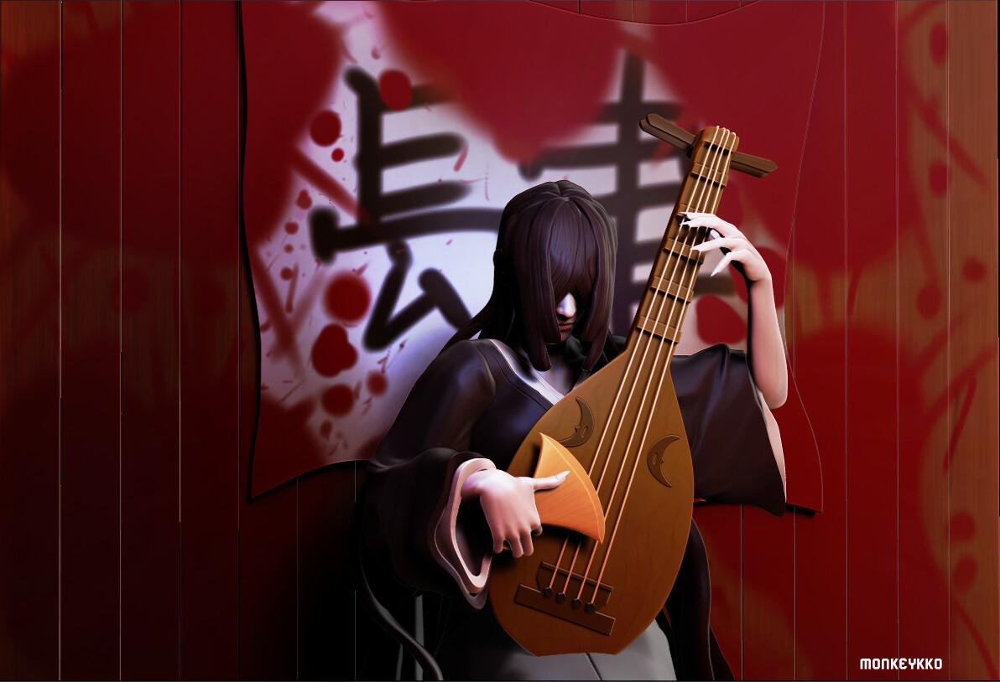
Scenario Interlude: Open Heart
Interlude 1: Toward the rear of the palace, a minimalist shrine sits surrounded by paper talismans. Upon its altar, a small wooden receptacle holds an offering...a human heart, still fruitlessly beating, despite being separated from its host body. A pool of blood congeals around the base of the altar, and you notice it seems to be draining into the base somehow. On a hunch, you put your shoulder to the altar and begin to push, and it slides to the side, as if on rails, revealing a trap door concealed beneath.
You lift the gate and lower yourself down into the sublevel gently; all light seems to escape the bowels of the palace and it isn't long before you're fumbling around in absolute darkness. Suddenly, your foot no longer meets the ground and you tumble off a precipice, sliding down an angled chute until you are roughly deposited into a large candlelit room. When you pick yourself off the ground and assess your surroundings, a sharp intake of breath passes your lips. At the center of the dungeon, a stone slab sits elevated off the floor, bearing the weight of what appears to be a slender human body, draped in a white blanket. The walls of the room are iron bars, like a prison cell, and masses of writhing hands reach out from within the cells, straining to clutch at the edges of the pristine sheet...
Move each investigator to Undercroft Theatre.
Scenario Interlude: The Master's Craft
Interlude 1: You can't help but notice that there are a suspicious amount of mannequins and miniature statuettes throughout the palace. Though unsettling to behold, the detail and craftsmanship on these dolls are unarguably impressive. Perhaps they were toys meant for the royal heirs, you think, commissioned from some local artisan and produced to curry favor with the court...but that doesn't explain why each and every one of them looks exactly like Mayu. It's only been a few days since the twins disappeared from Minakami; these can't all have possibly been produced by hand in such a short time. Portraits on the walls of the palace seem to depict a young child draped in regal garb who also superficially resembles the twins, but the artwork that features this person includes traditionally masculine symbology; keen blades suggesting virility, ornamental armor rendering them impervious, and so on. One large tapestry you find depicts them taking shelter under the brilliant plumage of a massive peacock. The ambiguity remains unresolved; was this a princess or a prince...?
Add the Meticulous Handiwork treachery to the victory
display.
Scenario Interlude: The Best Laid Plans
Interlude 1: You cannot help but marvel at the scale of the collection that has been amassed in the palace's library. Eagerly, you begin to remove a few promising-looking manuscripts from the shelves, expecting that at least one in this teeming mass of information might actually be capable of providing you with some answers, but even the ones that don't immediately turn to dust in your hands prove to be essentially useless. Apparently the royal archivist did not understand the importance of climate control; a grey mold seems to have infested the library, scouring most of the remaining tomes, and rendering those that remain physically intact virtually illegible. After a few minutes of fruitless searching, you're just about to give up hope when you notice a scroll spread across one of the nearby desks that you would have sworn was empty just a moment ago. The parchment is lengthy, and currently held open to a specific section by a number of small obsidian stones pinning down the corners. You think you can recognize a depiction of the palace, and some sort of passage leading into the mountains...
Any investigator may choose to take control of the set-aside
Bloodstained Almanac (The Atlas of Onigawa) story asset
and put it into play in their play area. Otherwise, remove it
from the game.
.jpg)
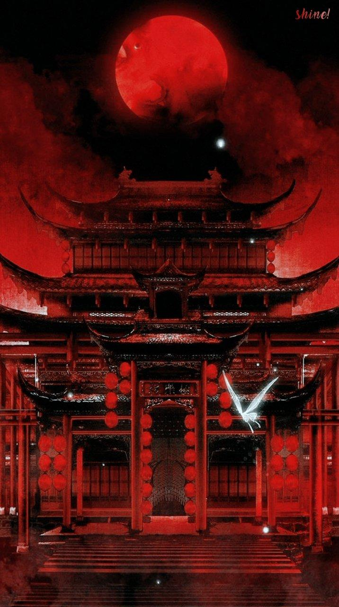
If no resolution was reached because each investigator was defeated: An inferno consuming the palace has grown severe enough to compromise its structural integrity, and as you attempt to flee from the monster relentlessly pursuing you through the halls, a crossbeam falls ahead of you, barring your path and filling the room with dark, thick smoke. You spin on your heels to attempt to pivot...but the monster shambles around the corner, blocking your path. You can do nothing but watch in horror as it slowly pulls itself towards you, its filthy fingernails splintering wherever it grasps for a handhold. You focus on one of the blackened handprints left behind in its wake while you wait for the end...
Skip to Epilogue I: The Ghosts of Onigawa
(page 38).
Resolution 1: The passageway behind the sculpture quickly dead ends into a sparse room with a high ceiling; besides a small candelabra in each corner providing a modest amount of illumination, the small shaft is virtually empty. A panic room for the royal family, perhaps...?
You slump down on the floor and prepare to take a breather when a strange mechanical grinding noise behind the walls begins to squeal disconcertingly. You begin to wonder what possible use could this room have for such a raised ceiling that you're unable to even see it when, suddenly, the floor lurches underneath you and the passageway that led you here begins to disappear below the edges of the floor...
Gradually, the elevator picks up speed while you keep your eyes trained on the darkness overhead, and, eventually, the ceiling terminating the shaft comes into view. You brace yourself for impact, but the elevator slows, and an aperture of moonlight appears overhead...
If any investigator controls the Bloodstained Almanac
(The Atlas of Onigawa) story asset, they may choose
to add it to their deck. It does not count toward their
deck size.
Each investigator earns experience equal to the
combined Victory X value of all cards in the victory
display.
Proceed to Scenario VI: The End of August.

Scenario VI: The End of August
Intro 1: You step off the platform and find yourself standing in a modest pagoda at the center of a small pond perched on a towering cliff that overlooks the city. There is no return mechanism to lower the platform back down that you can detect; it must always have been operated by servants dwelling inside the palace.
Before you, an elevated wooden walkway runs from the pagoda, over the placid pond, to the nearby shore. A small forest surrounds the pond and, looming above the grove, a large snow-capped mountain---which you presume must be Mount Kokoro---sits in silent repose, partially occluding the super moon and casting its tall shadow across the treetops. By the shore, you notice a stone walkway leading underneath another torii gate and disappearing into the forest beyond...
Check the Campaign Log.
If the investigators let Mayu assist with the investigation,
proceed to Intro 2.
Otherwise, skip to Intro 3.
Intro 2: Mayu's slender fingers tug gently at your hand as you stare at Mount Kokoro in silent awe; her steely gaze is set on the mountain's peak. "Miyu's up there... I just know it." Her voice quivers as she speaks, whether out of fear or the bitter chill that has begun to set in, you can't rightly say...
Proceed to Intro 3.
Intro 3: You've had quite enough of forests and red arches for one lifetime, you think, but with no means of returning to the palace, pressing on seems to be your only option. Taking inventory, you immediately realize you're not exactly outfitted for navigating mountainous terrain. You figure that maybe if you stick to the path you can avoid the worst of it, but just as you feel ready to set out, a light snowfall begins to blanket your surroundings...
Proceed to Setup.
Gather all cards from the following encounter sets: The End
of August, Gifts Ungiven, Moonlit Madness, Slumbering
Serpents, and Winds of Winter. These sets are indicated by
the following icons:
Set the Slumbering Serpents, Winds of Winter, and Gifts
Ungiven encounter sets aside out of play.
Put the Exodus Padoga and all 12 Mountain Pass locations
into play unrevealed, then reveal the Mountain Pass
location connected to Exodus Pagoda (Kokoro Approach).
Investigators begin play at Exodus Pagoda.
If any investigator's deck contains The Mute Huntress
(Blessing of the Yukihyo) story asset, reveal the Mountain
Pass location that is connected to Kokoro Approach.
If any investigator's deck contains The Prodigal Apprentice
(Blessing of the Kitsune) story asset, remove 1 charge from
that asset.
Shuffle the remaining encounter cards to form the
encounter deck.
Add 1 token to the chaos bag.
You are now ready to begin.
This scenario introduces frost () tokens to the campaign. The first frost token revealed from the chaos bag during a skill test has the following modifier: “–1. Reveal another token.” If another token is revealed from the chaos bag during the same test, immediately end the “reveal chaos tokens” step of the skill test and resolve the test as an automatic failure. Frost tokens are returned to the chaos bag after they are resolved, and additional tokens may be added to the chaos bag throughout the course of the scenario.
If you are playing this scenario in Standalone Mode, use the following conditions while setting up this scenario:
Setup the chaos bag with the following tokens:
0, 0, –1, –1, –2, –2, –3, –4, –5, , , , , ,.
The investigators made a promise to Mayu.
Gather the Guardians of Minakami encounter set.
Each investigator must randomly add 1 of the
included Aspect cards to their deck for the duration of
this scenario. It does not count against your deck
limit.
Scenario Interlude: The Witness
Interlude 1: Preoccupied with this oddity before you, you hardly notice when your foot disturbs a lattice of runes surrounding the cocoon, and, in response, an arc of magical energy crackles across its surface. The creature inside cranes its neck to the side to regard you for a moment before looking away again, and you follow the creature's gaze over the side of the mountain and down into the valley below. From your perch, you gain a sense of your environment, but the geography is unfamiliar; you don't recognize any of the landmarks you saw en route to Minakami what seems like a lifetime ago. The rail network that brought you from Arkham isn't there and never was. You begin to feel that not only are you in another place, but another time. It shouldn't be possible. It makes no sense...
...but what you do understand, at last, is the sorrow in the creature's eyes; this place is, or at least was, his seat of power. The palace contained many depictions of the pantheon's impetuous prince, Kanon, and the betrayal he suffered which resulted in his imprisonment upon Mount Kokoro. Below, the city appears in miniature, and where once he must have enjoyed his imperial vantage, he has now been condemned to languish here and watch his kingdom burn, over and over again. You wonder how long he has endured this sentence. Will it ever end...?
Just then, the wind picks up around you, carrying the echo of gentle chimes, and Kanon nobly erects himself, fanning his vibrant plumage as best he can within the confines of the sphere. The Crimson Butterfly emerges from the blizzard and softly lands on his prison for just a moment before once again taking flight and disappearing into the distance. Once it has passed, a crack forms on the surface of sphere where it had landed...moments before it shatters like glass. Freed from his bondage, you watch in awe as Kanon raises his head skyward and caws at the full moon above, like a shrill note coaxed from a trembling violin. When he relents, Kanon explodes into motes of misty aether which hypnotically soar into the air, as if on wings, and charge in the direction of the looming moon overhead. A moment of ominous silence passes, and then a shadow falls over you as you watch the moon turn bloody red, right before your eyes...
Each investigator must exhaust an Aspect asset they
control. If you cannot, take 1 horror instead.
If no resolution was reached because each investigator was defeated: You've lost track of how long you've been on the mountain; it seems like a lifetime ago you stepped off the platform at the pagoda. The mountain's protectors have proven too fierce to contend with and you simply cannot bring yourself to take another step. Wracked with exhaustion, you collapse face down in the snow, the howling winds gently lulling you into a deep slumber...
If any investigator's deck contains the Bloodstained
Almanac (The Atlas of Onigawa) story asset, they
may exile it.
If they do, the investigators must replay Scenario
VI: The End of August.
Reset the game to this scenario's Setup. Do not
record anything else in your Campaign Log except
for any trauma suffered from your previous game.
Any player whose investigator was killed or driven
insane must choose a new investigator to play.
Otherwise, skip to Epilogue I: The Ghosts of
Onigawa (page 38). (Note: This will end the campaign.)
Resolution 1: You eagerly take shelter within the fortress. A dim entryway offers some welcome protection against the elements, but you have a hard time relaxing with the knowledge that that thing is still out there, hunting you...
In your Campaign Log, record the investigators fled
from the Yuki-onna.
Each investigator earns experience equal to the
combined Victory X value of all cards in the victory
display. Do not spend your experience yet.
Proceed immediately to Interlude III: Sweet
Release.
Resolution 2: You eagerly take shelter within the fortress. A dim entryway offers some welcome protection against the elements. You'll need some time to recover and lick your wounds; whatever that thing was that was chasing you certainly gave you a run for your money...
In your Campaign Log, record the investigators
subdued the Yuki-onna.
Each investigator earns experience equal to the
combined Victory X value of all cards in the victory
display. Do not spend your experience yet.
Proceed immediately to Interlude III: Sweet
Release.
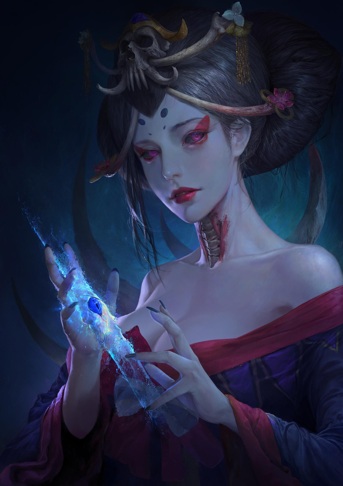
Interlude III: Sweet Release
Interlude 1: The temperature noticeably rises as you enter the fortress, and, exhausted and half-frozen from your grueling ascent up the mountain, you decide to make camp in the entry hall and rest for a while before continuing deeper...
Remove all tokens from the chaos bag.
Each investigator may spend 2 experience to heal 1 physical
or mental trauma.
Proceed to Interlude 2.
Interlude 2: You sit around the makeshift firepit you've constructed and warm your frostbitten limbs for a few minutes, when suddenly the sound of twinkling chimes startles you to your feet. Glancing around nervously, you scan the shadows for signs of life. Overcome with the feeling of imminent danger, you spin around and shout in terror as you come face to face with the witch who stalked you through the snow: the Yuki-onna. She stands motionless by the edge of the fire, her white hair concealing her face in shadow. Just as you gather your wits and prepare to defend yourself, the soft glow of the Crimson Butterfly descends from the darkness above you, gently landing on one of the Yuki-onna's gnarled fingers...
Check the Campaign Log.
If the investigators fled from the Yuki-onna,
skip to Interlude 4.
Otherwise, proceed to Interlude 3.
Interlude 3: The Crimson Butterfly begins to beat its wings, and its soft red glow intensifies into a blinding light that forces you to avert your gaze. When you look back, the Yuki-onna is gone...and in her place stands a tall, slender woman with porcelain skin, draped in a regal gown. Her beauty alone is nearly enough to move you to tears. The maiden twists her palm delicately, shooing the Crimson Butterfly away, and the creature flies off, sailing deeper into the darkness of the fortress. She regards you warmly and smiles before speaking.
"Thank you for releasing me..." Her voice is soft as silk, like a warm breath in your ear. She speaks in some ancient tongue, long forgotten, but somehow, you are able to understand her meaning...
"I am Kaoru, 'Queen of moonlight'... and First of the Nightfallen."
In your Campaign Log, record the Crimson Butterfly
purified the spirit of The Lunar Queen.
Check the Campaign Log.
If the investigators let Mayu assist with the investigation,
skip to Interlude 5.
Otherwise, skip to Interlude 6.
Interlude 4: The Yuki-onna swiftly balls her hand into a clenched fist, hissing bitterly as it crushes the Crimson Butterfly in her icy grasp. You can do nothing but watch in horror as the crimson light bleeding through the cracks in her fingers flickers and slowly dies out, and when she releases her grasp, the creature is gone. The Yuki-onna turns her attention to you, and rears back as if to strike...but merely collapses to the ground, writhing in agony. A blinding light flashes from within the creature for a few moments, and when it relents, the Yuki-onna is gone, and a tall, beautiful woman with a painted face and flowing gown lies exhausted on the ground in her place. Could this be her true form...? "Listen to me..." the woman desperately gasps, on the verge of expiring. She speaks in a foreign tongue, and yet...
In your Campaign Log, record the Crimson Butterfly was
banished by the Yuki-onna.
Check the Campaign Log.
If the investigators let Mayu assist with the investigation,
proeed to Interlude 5.
Otherwise, skip to Interlude 6.
Interlude 5: "I am glad to see that you are safe, child," the woman smiles sadly at Mayu before continuing, "and I regret that it is too late to save your sister from her fate..." Mayu's lip trembles, and her little hands ball into shaky fists.
"No... No, you're wrong!" Mayu cries out, "I don't believe you!" In a huff, Mayu turns and breaks into a dash, disappearing into the darkness of the fortress...
In your Campaign Log, record Mayu is searching for Miyu
alone.
Proceed to Interlude 6.
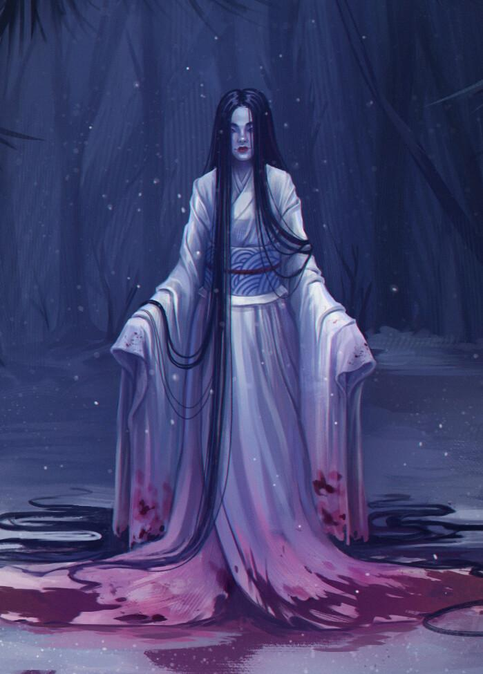
Interlude 6: "There isn't much time, so I must be brief... The Guardians of Onigawa once used this sacred place as their spawning grounds... But now only their ghosts remain. The pantheon has been usurped by a dark power, once restrained by our covenant with the Guardians, but ultimately unleashed by our wickedness and folly. In desperation, the pantheon attempted to protect your world by isolating you from us, containing the darkness within the twilight of Onigawa's ruin, but their power has waned during their long vigil, and now...that darkness seeks a foothold back into your world, and sacrifice is the engine of its resurrection. All you have seen has been done in its name...and, left unopposed, it will mean the end of all things. The source of this power has had held many names throughout the ages and its true name is known to few: Moloch..."
The fire crackles when the name is spoken, and a shiver races down your spine. What sort of profane power could be responsible for all of this...?
"It awaits you at the summit of Mount Kokoro," The woman continues, and you follow her gaze as it fixates on the darkness in the distance, "I once tried to turn back the clock and set things right...but I failed. You must not..."
Check the Campaign Log.
If the Crimson Butterfly was banished by the Yuki-onna,
skip to Interlude 8.
Otherwise, proceed to Interlude 7.
Interlude 7: "...I will provide you with whatever assistance I am able, when the times comes," the soft voice whispers as you peer into the darkness beyond the campsite. You do feel bolder somehow, bolstered by her words...
One investigator must add the Queen Kaoru (First of the
Nightfallen) story asset included in the Gifts Ungiven
encounter set to their deck. This does not count toward
your deck size. If this investigator leaves the campaign,
immediately transfer this asset to a surviving investigator.
If Yuki Yagami is one of the investigators in the campaign,
skip to Interlude IV: The Queen's Gambit.
Otherwise, proceed to Interlude 8.
Interlude 8: When you look back the woman is gone, along whatever further assistance she might have been able to offer you...including any insight regarding the nature of the mysterious Crimson Butterfly. The twinkling of chimes echoes behind you as you turn your attention to the wave of heat emanating from the sprawling innards of the fortress ahead...
Each investigator earns 1 additional experience as their
insight into the mythos deepens. Investigators may now
spend their experience.
Skip to Scenario VII: The Molten Armory.
Interlude IV: The Queen's Gambit
Interlude 1: Yuki timidly approaches the Lunar Queen...
Only the investigator playing Yuki Yagami may read the
remainder of this Interlude. They must do in secret. They
will be asked to make a number of choices on their own,
and be told when they are allowed to read aloud again.
When they are ready, they may proceed to Interlude 2.
Interlude 2: As The Lunar Queen speaks, you feel yourself drawn to her, and by the time she finishes her tale, you are standing before her, unsure what to say, but certain that she has something that you need. Wordlessly, the Queen smiles at you before producing a curio concealed within the folds of her robe. She holds it in her hands before you and you examine the strange relic; it appears to be an icy orb containing a still beating heart. You cannot imagine what it is for, but you can sense its immense power. As you gaze into the frozen talisman, a voice enters your mind; it is soft and smooth and strangely comforting despite the circumstances. You feel as though you faintly recognize it, like a half-remembered dream or a memory from your distant past...
"Do you recognize it, child? You are indeed of my blood and their rituals were not powerful enough to strip you of your birthright. The Stewards of August bred many shrine maidens throughout the ages. They are long gone now, but blood is thicker than even ice, it seems. The goddess's strength flows through our veins; it is by her grace that Moloch was kept at bay for so long, and such a boon is due an equivalent sacrifice. When the pantheon fell and Onigawa came under siege, I made such a sacrifice in order to save my people, though I could not begin to calculate the true cost. Moloch held up his end of the bargain; The War Eternal still rages down there, as you have seen. The battle for Onigawa has not been lost, though I wish now that it had. In exchange for this "boon," he turned me into something profane, something even the Guardians could never forgive: the Yuki-onna, devourer of men... The first vampyr. I cannot be destroyed while the heart still beats, I can only feed its endless hunger. But I may pass its power to another of the bloodline, if you wish to release me from this torment..."
You alone must decide (without conferring with other investigators):
Accept The Lunar Queen's request.
Proceed to Interlude 3.
Decline The Lunar Queen's request.
Proceed to Interlude 4.
Interlude 3: While she speaks, a sadness forms in Kaoru's eyes you cannot begin to measure. Your sympathies for this noble creature overwhelm you, and you instinctively reach out with your hands and place them upon the frozen talisman.
"I have lived this way for so long..." The tenor of Lunar Queen's voice grows uneven in your mind; it is clear she did not expect you to make this choice, "Perhaps you will bear this burden more nobly than I could. Thank you, my child..."
Her hands withdraw from the orb and she steps back as it imbues you with its unholy power. You shiver as both the orb and The Lunar Queen vanish into nothingness before your very eyes, and you feel a dark power take root in your breast...
"I shall always be with you...."
You must add the Icebound Fetish (Blessing of the
Lunar Queen) story asset included in the Gifts Ungiven
encounter set to your deck. It does not count toward
your deck size. Your investigator's Deckbuilding
Requirements gain "Icebound Fetish".
Skip to Interlude 5.
Interlude 4: Blood may be thick, but blood magic is thicker... You feel as though the snow witch means well, but your faith is your shield and you need no strength other than your own. You reach out and grasp the Lunar Queen's delicate hands, folding them over the frozen talisman. Her cold flesh stings like nettles at first, but quickly thaws at your warmth. You close your eyes and offer a prayer to the Guardians, and when you open them again and unfold your hands, the beating organ inside the orb has vanished. The Lunar Queen looks stunned for a moment and then vanishes into nothingness, her grateful voice echoing still in your mind...
"You... Could it truly be? The Goddess reborn...?"
You gain 2 additional experience as your insight into
the mythos deepens.
Proceed to Interlude 5.
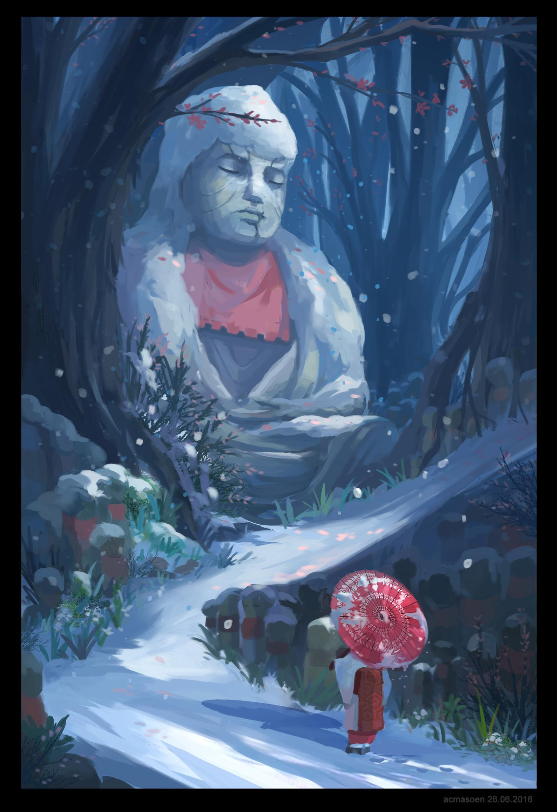
Interlude 5: You take a deep breath as a deluge of insights race to the forefront of your mind. A floodgate of memories has opened, and, for just a moment, you remember everything...
You are from this place, born and bred to be a shrine maiden of Onigawa. The Stewards of August meant to sacrifice you to this dark power, to stave off Moloch's encroachment, but in so doing would only have hastened his inevitable coming. But your sacred blood protected you from their corrupted rituals, and they could not profane your body the way they had the others. The spell went haywire, casting you across time and space, and when you woke up, you were in Minakami, boarding a train... You glance back to your companions, who watch you warily. Would they understand? How could they...?
You alone must decide (without conferring with other investigators):
Conceal the secret of your heritage from your allies.
Proceed to Interlude 6 and resume reading aloud.
Share the secret of your heritage with your allies.
Skip to Interlude 7 and resume reading aloud.
Interlude 6: You watch in silence as The Lunar Queen stares down your companion. The pair never exchange words, but you see her offer Yuki something before she disappears. When your companion returns, she seems at a loss for words and unable to communicate whatever has just transpired, but you notice her eyes burn with a fierce determination. You feel like it would best not to question her about it; there are more pressing concerns at hand...
In your Campaign Log, record Yuki's resolve was bolstered.
The investigator playing Yuki Yagami may spend 2
experience to heal 1 physical or mental trauma.
Investigators may now spend their experience.
Skip to Scenario VII: The Molten Armory.
Interlude 7: You watch in silence as The Lunar Queen stares down your companion. The pair never exchange words, but you see her offer Yuki something before she disappears. When your companion returns to you, you immediately notice an improvement in her demeanor, as if a weight has been lifted from her shoulders. Yuki somberly confides in you that the Lunar Queen spoke to her of Yuki's true heritage: Yuki is not from Arkham, nor even Minakami as you had suspected. She was once a shrine maiden of Onigawa, raised under the yoke of the Stewards of August to be sacrificed to their gods, just as the Lunar Queen once was. Somehow, the power of her sacred bloodline protected her from the final dark ritual and cast her out into your world, at the cost of her memories. The Lunar Queen is a distant ancestor of hers who naively made a pact with Moloch to save her homeland from invaders, but paid a terrible price...which Yuki has now apparently relieved her of.
In your Campaign Log, record Yuki's resolve was bolstered.
Each investigator earns 1 additional experience as their
insight into the mythos deepens. Investigators may now
spend their experience.
Proceed to Scenario VII: The Molten Armory.
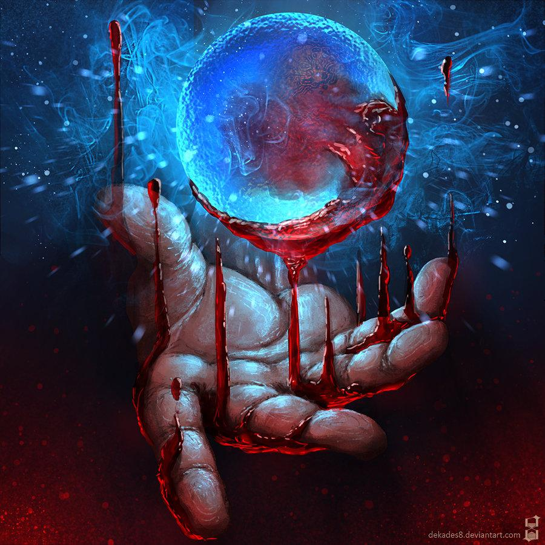
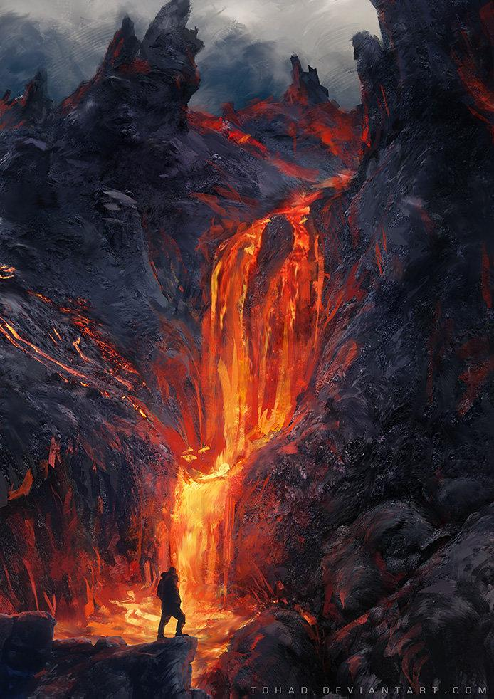
Scenario VII: The Molten Armory
Intro 1: The temperature continues to climb as you venture deeper into the fortress, and it isn't long until you understand why. The twisty passageway you followed from the entrance hall causes you to eventually emerge into a rocky alcove. Smoke stings at your eyes as you round the final bend, and rivers of magma begin to lap up against the sides of the dirt path that leads you deeper into the bowels of this curious place. You see no throne, no servants quarters, no high table for feasting, but it isn't until you glance up, and see the blood red moon above you, framed perfectly by the edges of the caldera, that you realize the truth: you are inside Mount Kokoro.
From the edge of the cleft, your vantage affords you a full view of the roiling innards of the volcano. Scattered across a smattering of wooden walkways that connect the narrow islands emerging from the massive pool of lava below, smithing anvils, furnaces, and various other tools can be seen suggesting this place, at least at some point in time, acted as a large foundry. Was this place meant to forge armaments utilized by Onigawa's fighting force? Or was something greater built here...?
Read only if Carmen Carlyle is one of the investigators in the campaign:
You notice Carmen staring intently into one of the pools of molten rock. You thought about saying something to her when she stopped to take a very leisurely dip in the hot springs earlier, but now it's far too late for your words to reach her. Carmen's face awkwardly contorts into a shape you've never seen it take before, and it takes you a few moments to realize what is happening: she's smiling. For some reason, this sight seriously unsettles you. You look away anxiously when you realize her skin is starting to smolder beneath her clothes...
The investigator playing Carmen Carlyle begins this
scenario with 2 embers on The Fire Inside.
Each other investigator begins this scenario with 1
fewer resources.
Suspended above the vast molten pool by a series of enormous soot-covered chains and platforms, an enormous suit of armor seemingly built into the caldera looms over you, and near the bottom of the pit, a series of granite walkways converge on a small platform containing an oversized anvil...
Check the Campaign Log.
If Mayu is searching for Miyu alone,
proceed to Intro 2.
Otherwise, skip to Intro 3.
Intro 2: The complex inside Mount Kokoro is sprawling and multi-tiered, but you can see no signs of Mayu from where you are currently situated. Still, if she came this way, she must be around here somewhere. Unless, well, you'd prefer not to think about it...
The investigator with the Mayu Tachibana (The Elder
Twin) story asset in their deck must exile it.
Proceed to Intro 3.
Intro 3: Beads of sweat begin to form at your brow. The geothermal energy produced by Mount Kokoro is staggering; dehydration is a serious concern here...
You need to find a way out...fast.
Proceed to Setup.

Gather all cards from the following encounter sets: The
Molten Armory, Astral Armaments, Fiery Fate, Lunar Lunacy,
and Memories of Mayu. These sets are indicated by the
following icons:
Set the Fiery Fate, Astral Armaments, and Memories of Mayu
encounter sets aside, out of play.
Put Ashen Alcove and the remaining Depths locations into
play, unrevealed.
Investigators begin play at Ashen Alcove.
If any investigator's deck contains The Blind Warden
(Blessing of the Karasu) story asset, that investigator begins
this scenario with 1 additional card in their opening hand.
If any investigator's deck contains The Mute Huntress
(Blessing of the Yukihyo) story asset, that investigator begins
this scenario with 1 fewer card in their opening hand.
Shuffle the remaining encounter cards to form the encounter deck.
You are now ready to begin.
If you are playing this scenario in Standalone Mode, use the following conditions while setting up this scenario:
Setup the chaos bag with the following tokens:
0, 0, –1, –1, –2, –2, –3, –4, –5, , , , , ,.
Mayu was slain in the hidden village.
Gather the Guardians of Minakami encounter set.
Each investigator must randomly add 1 of the
included Aspect cards to their deck for the duration of
this scenario. It does not count toward your deck
size.
Scenario Interlude: In the Hot Seat
Interlude 1: Your sweltering hike through the volcano is interrupted when you hear a shriek somewhere below you. You glance over the edge of the walkway...and see Mayu, desperately clinging to the edge of a cliff while she dangles precariously over a pool of lava. At first, you simply blink; this must be some sort of heatstroke-induced hallucination. But then a look of sheer terror strains her face as her eyes find yours and your heart begins to pound...
The lead investigator must choose one investigator to test
(4). All other investigators may commit 1 card to this
test, regardless of their current location. The results of this
test cannot be canceled or reattempted by player card
effects (nor can its failure be negated).
If you succeed, skip to Interlude 3.
Otherwise, proceed to Interlude 2.
Interlude 2: There's nothing you can do but look away as Mayu's fingertips slip from the crumbling rock. You hear another scream below you growing distant...and then a splash...and then nothing but the crackling of the roiling lava all around you. Suddenly, the ground begins to shake, and a shadow within the molten pool begins to rise to the surface...
In your Campaign Log, cross out Mayu is searching for Miyu
alone and instead record Mayu could not escape her fiery fate.
Each investigator must add 1 copy of the set-aside Memories
of Mayu story weaknesses to their deck and place it in their
discard pile. It does not count against your deck limit.
Spawn the set-aside The Tallow Chorus enemy at the
Drainage Sluice location and exhaust it.
Interlude 3: Just as Mayu's slender fingers slip from the crumbling rock... You're there. With an outstretched arm and a firm grasp on her delicate wrist. Against all odds, you were able to clamber down the nearby cliff face and race to Mayu's aid without a moment to spare. You swiftly hoist her back up onto solid ground and she collapses into your arms, clearly exhausted from her ordeal. You remain there for a long while while she sobs gently into your shoulder...
In your Campaign Log, record the investigators averted
Mayu's fiery fate.
Each investigator may heal 1 horror from their investigator.
Each investigator earns 1 additional experience.
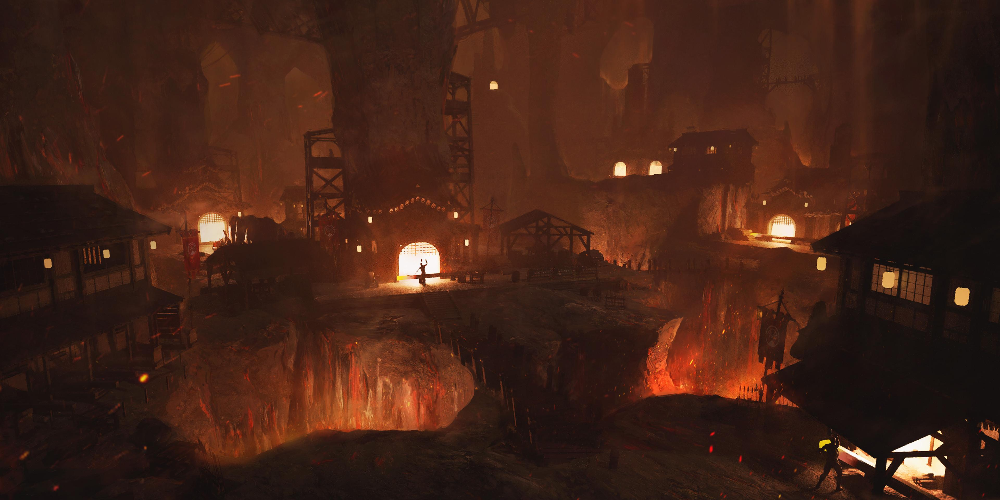
If no resolution was reached because each investigator was defeated: The spirit may be willing but flesh is weak, and the intense heat of the volcano proves too much for you to contend with. You collapse into the dirt, drenched in sweat and soot, as your mind swims in and out of consciousness. Images flash in your memory of a warrior in charred armor dragging your body across the ground, a flaming portal, and a stygian spire in the sky. You regain consciousness somewhere on the other side of the portal, at the base of a stone staircase which stretches on for infinity...
In your Campaign Log, record the investigators were
abducted inside Mount Kokoro.
Each investigator earns experience equal to the
combined Victory X value of all cards in the victory
display.
Proceed to Scenario VIII: The Black Harvest.
Resolution 1: With the foundry out of commission and the flaming barrier guarding the gate banished, you are allowed free passage to the upper caldera. A seemingly endless staircase leads you skyward, towards the summit of Mount Kokoro, where a stygian spire and its cruel master doubtlessly await you...along with a lost little girl.
In your Campaign Log, record the investigators
sabotaged the sacred foundry.
Each investigator earns experience equal to the
combined Victory X value of all cards in the victory
display.
Each investigator earns 2 additional experience as
their insight into the mythos deepens.
Proceed to Scenario VIII: The Black Harvest.
Resolution 2: A basin of water cools your new weapons to the touch, but tiny flames continue to dance along the edge of the blades, even after you've retrieved them. Confidently, you approach the flaming portal near the apex of the volcano. You slide your handiwork into the flame, cutting through the barrier like it was nothing. Beyond the mouth of the portal, a grand staircase spirals skyward, towards the mountain's peak, where a stygian spire, its cruel master, and a lost little girl, all eagerly await your arrival...
In your Campaign Log, record the investigators
used the Anvil of Creation.
Each investigator earns experience equal to the
combined Victory X value of all cards in the victory
display.
One investigator must add both the Tsurugi's Might
(Cleaver of Dusk) and Midori's Cunning (Cutlass of
Dawn) story assets included in the Astral Armaments
encounter set to their deck. These do not count
toward their deck size.
Proceed to Scenario VIII: The Black Harvest.
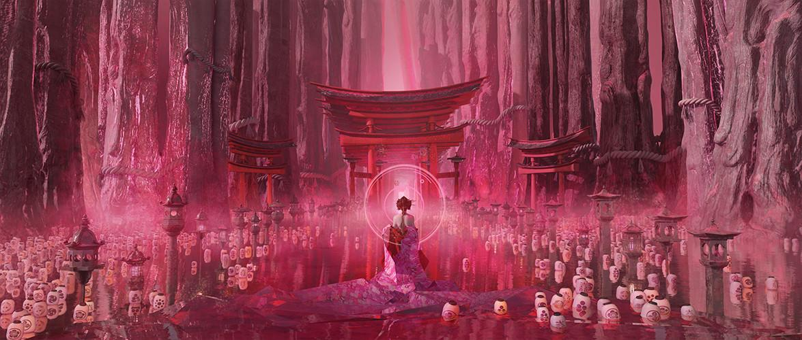
Scenario VIII: The Black Harvest
Check the Campaign Log.
If the investigators made a promise to Mayu,
proceed to Intro 1.
If Mayu is searching for Miyu alone,
and the investigators averted Mayu's fiery fate,
skip to Intro 4.
If Mayu was slain in the hidden village
or Mayu could not escape her fiery fate,
skip to Intro 2.
Otherwise, skip to Intro 3.
Intro 1: It seems like a lifetime ago that you made that promise to Mayu back in the village that you would find her sister and bring her home safely. If you had known exactly what keeping that promise would entail, you probably wouldn't have made it, but lately, for reasons you can't fully articulate, it has become increasingly important to you that people do the things they say they are going to do. So, here you are---wherever and whenever here is---blindly marching towards an end you cannot begin to even fathom. No one will ever believe you if you try to recount the details of this "vacation" of yours. How could they? Nobody else has seen what you have seen. Nobody except a young girl named Miyu. She's close now...and you're going to bring her home.
In your Campaign Log, record the investigators reached the
summit of Mount Kokoro alone.
Skip to Intro 5.
Intro 2: You replay the events over and over in your mind, trying to imagine if there was any other way things could have played out, but the reality remains unchanged: Mayu is gone, and there's nothing you can do about it. There's only one person you can help now...a young girl named Miyu. She's close now. You can feel it. And you're going to bring her home. Whatever it takes...
In your Campaign Log, record the investigators reached the
summit of Mount Kokoro alone.
Skip to Intro 5.
Intro 3: The irony is bitter; when on the verge of finding one twin, you lost the other. It figures; you should have sent Mayu back through the portal when you had the chance, but you suspect it won't matter, in the end. She must have made it through, right...? You were both bound for the same place, aimed at the same goal: get Miyu back, whatever it takes...
In your Campaign Log, record the investigators reached the
summit of Mount Kokoro alone.
Skip to Intro 5.
Intro 4: Behind you, you can sense Mayu struggling to keep up with your long steps as you climb the staircase together. Considering what she's been through, you're surprised she's even still standing. But then again, if someone you loved was taken from you, who knows what you might be capable of?
You slow your pace, allowing Mayu to catch up to your side, and she looks up at you expectantly with glassy eyes and ruddy cheeks...
"Everything's going to be alright," you say, as much to yourself as to the small girl who has followed you all this way, "You're doing a great job... We're going to get your sister back, together."
"I know," Mayu softly replies, wiping the tears forming at the corners of her eyes with the tattered edge of her sleeve before continuing, "I'm sorry I ran away..."
You aren't mad; you understand why she did it. In her shoes, you probably would have done the same thing. That sort of reckless stubbornness has gotten you far in life. It got you here, in fact...
As you continue walking, somewhere along the way, Mayu's delicate hand finds yours and slides into your palm, and you wrap your fist around her warm fingers and give them a gentle squeeze. Mayu's breath steadies, bolstered by your support. She may have only just met you, but she knows she can trust you with anything...
In your Campaign Log, cross out Mayu is searching for Miyu
alone and record Mayu is with you until the very end.
Proceed to Intro 5.
Intro 5: Just as the heat lapping at your back dies out, the staircase at last emerges onto a paved landing at the edge of a small temple protruding from the mountain's cavernous depths, and the snow-capped peak of Mount Kokoro comes back into view, though now much larger in your field of view than when you last spied it. Its jagged edge, like an ice-tipped spear, carves an arrowhead shadow into the sky where it occludes the bloody moon. Near the summit, a tall spire looms, casting its own shadow over the platform that conceals the shrine built at its base.
Inside the cathedral, a shapeless red light hovers in the air just above the shrine's altar, its spectral essence softly bleeding into the light of the moon, and behind it, a tall man, dressed in priestly garb, stands alone. He doesn't seem to notice or acknowledge you, and merely stands with his hooded head bowed and hands clasped, as if deep in prayer. You think you recognize the colors and symbols on his robes as those of the Stewards of August; the religious order who you've pieced together once called Mount Kokoro their home.
You open your mouth to call to the priest but the words catch in your throat as a sharp pain pierces your guts. Something is wrong; it feels like something is ripping itself from your very soul. But as quickly as it began, the pain subsides, and for a moment you are left comfortably numb. A mote of light ejects from your breast and dances skyward, racing towards the bloody moon with reckless abandon. As you watch it grow smaller and smaller, you're reminded of Kanon's "ascension" in the blizzard...and it is only then that you realize the aching cavity in your chest is due to the absence of something very precious, something you had foolishly taken for granted all this time...
The hollow, sunken chasm in your being is where the blessing had resided, the one you had received back in the forest grotto outside Minakami Village what feels like a lifetime ago. You hadn't really believed in fate or destiny then...but the circumstances surrounding Takeshi's death left you desperate, so you took a chance. Who could blame you? A leap of faith...and the Guardians have watched over you ever since. How else could you have made this far and done all the things that you have done?
But now, that light has gone out, the ink on the page of history is dry, and the Guardians of Onigawa and their divine pantheon are nothing more than a vanishing memory...
Each investigator must exile each Aspect story asset from
their deck.
Proceed to Intro 6.
Intro 6: "Congratulations are in order," the priest finally shouts to you, and his voice unnaturally echoes, as if being cast from somewhere far away, "I never would have expected you to make it this far, outsider. Your persistence is admirable. But it is of no consequence..."
Thunder claps overhead, interrupting the priest's speech. You look up just in time to see the surface of the bloody moon roil, as if it were a turbulent sea. The red bleeds from the edges of the moon's face, coalescing into a small crescent in the center of the sphere, and when the tempest settles, a runic shape emerges from the moon's surface, like brushstroke calligraphy painted upon a grey brick...
You don't have time to consider the symbol's significance, because the sounds of thunder quickly resume and a bolt of imprisoned lightning bursts forth from the surface of the moon, striking the cathedral's spire. The ground beneath you explodes, and you are thrown from your feet during the ensuing tremor. The sounds of upheaved earth deafen you as you desperately cling to your patch of dirt, and when you open your eyes, you find that the cathedral and even the icy summit of Mount Kokoro itself have been shattered by the cataclysm...
Now, tiny islands hang in the air all around you, orbiting the deep wound in the mountain and held aloft, you can only guess, by some combination of occult energy and the sagging moon's gravitational forces. The cathedral's spire has collapsed and the building itself has been cleaved into two independent halves, but the island containing the rear section suddenly drifts into your field of view. A shimmering crimson barrier now surrounds it, apparently erected by the priest to defend himself when the cataclysm struck, but when you catch a glimpse of the altar in front of him, you smile...
Part of you always knew you would reach this place, but it does feel good to finally have some material evidence supporting your intuitions. It feels good to be right. It feels good to see Miyu...
...But she is not alone. The priest continues his sermon, gesturing to the young girl's body that is bound to his altar and which remains exasperatingly inaccessible to you, close though she may be...
"...As you can see, you are too late to save the child. My master has waited a very, very long time for this day; the Guardians feared his power, but their vaunted covenant with the barbarians of this realm could only ever hope to delay his inevitable coming. Now, they have all fallen before him, one by one, and at long last, his machinations reach fruition... This bloody sacrifice fuels the engine of his resurrection. He will once again walk among us and he shall have his revenge against your world, in full measure, for all of time!"
Miyu's body becomes wracked with pain as the priest resumes channeling his profane ritual in short order. You know she can't hold on for much longer, so you take a deep breath to steady your nerves...
Check the Campaign Log.
If the Crimson Butterfly purified the spirit of the Lunar Queen,
proceed to Intro 7.
Otherwise, skip to Intro 8.
Intro 7: Soft chimes sound and a chilly gale kicks up behind you. A smile turns up the corner of your lips when you feel a presence at your back and the wind whispering in your ear in an ancient tongue...
"Night falls...and I stand with you."
The investigator who added the Queen Kaoru (First of the
Nightfallen) story asset to their deck may begin this
scenario with that asset in play.
Proceed to Intro 8.
Intro 8: The sounds of roiling surf draw your attention to a large pool on one of the broken islands...
Check the Campaign Log.
If the investigators encountered The Koi Princess,
proceed to Intro 9.
Otherwise, skip to Intro 10.
Intro 9: A geyser spouts from the center of the pool and a shadow emerges from within the mists. You watch a scaly creature glide across the surface of the water, unsure if its friend or foe. There is something about her that seems familiar, but you don't recognize her until her brow furrows and she meets your gaze with a solemn nod; as if on cue, a school of painted fish begin to leap out of the water around her feet, splashing in the melodic tempo of a war cry. It seems the girl you encountered on the river was no ordinary girl after all...
In your Campaign Log, cross out the investigators encountered
The Koi Princess, and instead record the Koi Princess is on
your side.
Skip to Intro 11.
Intro 10: A geyser emerges from the center of the pool and a shadow emerges from within the mists. A tall, serpentine man with reptilian eyes strides across the surface of the water, regarding you warily. In his arms, he carries the pale body of a young woman draped in a white sheet that is flecked with orange. She does not stir, even as a legion of painted fish begin to splash in the water around them. You watch in amazement as a crimson butterfly emerges from the girl's breast, and soars towards the altar. When it reaches the priest, it fades into nothingness, apparently empowering the ritual... Is this a fallen guardian, you wonder, or merely an opportunistic interloper? You suspect you won't have the opportunity to find out...
In your Campaign Log, record the Koi Emperor is set against
you.
Proceed to Intro 11.
Intro 11: You nearly lose your footing as another tremor passes through the broken cliff; Mount Kokoro is collapsing beneath your feet...
Check the Campaign Log.
If the investigators sabotaged the sacred foundry,
skip to Intro 13.
Otherwise, proceed to Intro 12.
Intro 12: You glance back one last time, surveying the landscape. Somewhere below you, Onigawa ceaselessly burns through the black night. Beyond its walls, a phantom ferryman guides his barge through the black waters of the river, and his dark business is faintly visible from a balcony at the apex of a hilltop manor, where a ghostly maiden yearns for a lost lover too much to let go of a life long since expired...
One thing is clear: whatever this place once was, whatever splendor it may once have bore, this is a realm of darkness, now. The Guardians are all gone, and perhaps mortal beings were always unworthy of them...
The bitterness threatens to overwhelm you; there's an unmistakable emptiness inside you now, where the Aspect that guided you once dwelled... But, in that hollow, a spark yet remains, and it assures you: vanquished though they may be...the Guardians were not fools.
Instinctively, your hand finds one of the blades you forged in Mount Kokoro. Moonlight shines down upon its keen edge, bathing it in a purifying light. For a moment, you think you can almost sense something dwelling within it...
Something angry...
Something powerful.
The investigator that added the Tsurugi's Might (Cleaver of
Dusk) and Midori's Cunning (Cutlass of Dawn) story assets
to their deck may choose one of them to begin this scenario
in play.
That investigator must also add The Pantheon's
Contingency (A Light in the Darkness) story asset to their
deck. It does not count against your deck limit. Do not look
at the reverse side of this card until you are instructed.
Intro 13: Another quake sets you on the back foot; your interference in the foundry's "normal" operations, in concert with the recent cataclysm, have obviously destabilized the volcano. You can only hope this act will pay dividends in the battle to come. For now, you have made what preparations can be made. It all comes down to this...
If Yuki Yagami is one of the investigators in this campaign,
proceed to Scenario Interlude: The Goddess Reborn.
Otherwise, skip to Setup.
Scenario Interlude: The Goddess Reborn
The investigator playing Yuki Yagami must read this section: A soft serenity wraps itself around your mind like a blanket and you know the Guardians have not abandoned you. A bright light shines from within you, embracing you in a warm radiance, and when it has gone, you are changed; here, in this place, you have become what you were always meant to be. All that power... This is what it was always meant for. This is what you are meant for...
You begin this scenario with Apotheosis (Living Sainthood) in play.
Proceed to Setup.
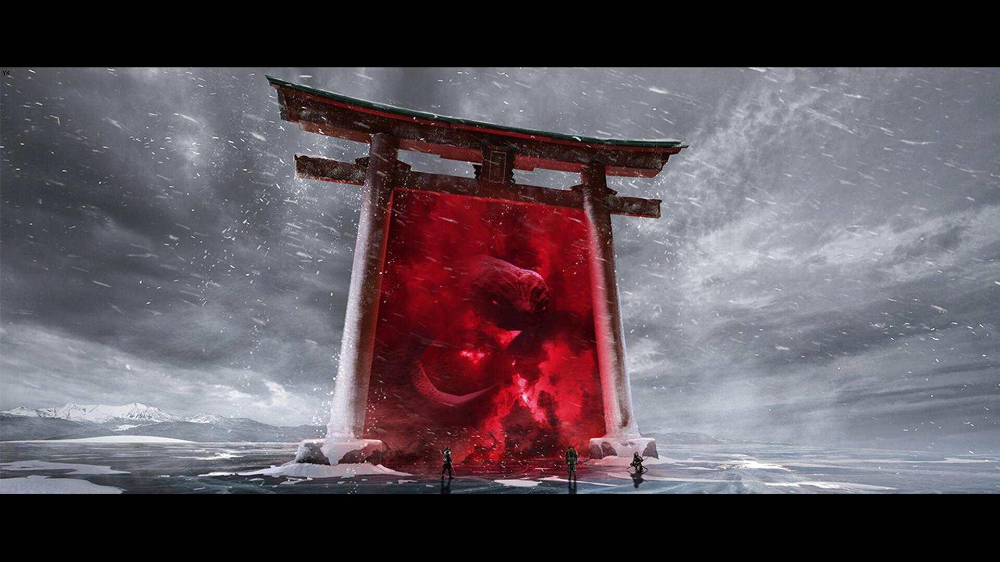
Gather all cards from the following encounter sets: The
Black Harvest, Cruel Corvids, Forged In Flames, Memories of
Miyu, The Shepherd's Flock,, and Sunken Kingdom.
These sets are indicated by the following icons:
Set the Forged in Flames, Sunken Kingdom, and Memories of
Miyu encounter sets aside out of play.
Put The Broken Shelf, Torii Nexus, The Drowning Pool,
Terramorphic Rainforest, Worldskein Aperture, Sundered
Cathedral, and Profane Altar locations into play
unrevealed.
The lead investigator begins play at The Broken Shelf.
Each other investigator must each choose a different
Shattered location at which to begin play.
Put the Shepherd of the Black Harvest (The Last Steward)
the Miyu Tachibana (Lost and Found) enemies into play at
Profane Altar.
Read the Sacrifice Deck section on this page, and then
shuffle The Shepherd's Flock encounter set and put it into
play face down as a separate sacrifice deck, attached to the
scenario card. Then, one at a time, reveal the top four cards
of the sacrifice deck and add them to the sacrifice display
(in the order they were revealed).
Check the Campaign Log and make the following
adjustments:
If The Koi Emperor is set against you, put the set-aside
The Koi Emperor (Resurgent Sovereign) enemy into play
at The Drowning Pool, shuffle the set-aside The Koi
Princess (Watery Grave) enemy into the sacrifice deck,
and remove the set-aside The Koi Princess (Dowager of
Lost Hope) story asset from the game.
If The Koi Princess is on your side, put the set-aside
The Koi Princess (Dowager of Lost Hope) story asset
into play at The Drowning Pool, shuffle the set-aside
The Koi Emperor (Resurgent Sovereign) enemy
into the sacrifice deck, and remove the set-aside The Koi
Princess (Watery Grave) enemy from the game.
If the investigators reached the summit of Mount Kokoro
alone, add 1 token to the chaos bag and remove the
Mayu Tachibana (Deputy Investigator) story asset from
the game.
If Mayu is with you until the very end, add 1 token to
the chaos bag and put the Mayu Tachibana (Deputy
Investigator) story asset into play at Torii Nexus.
Shuffle the remaining encounter cards to form the
encounter deck.
You are now ready to begin the final scenario of the campaign.
This scenario contains a separate encounter deck, the sacrifice deck, which contains encounter cards with the new keyword Sacrifice. Cards with the Sacrifice keyword trigger their printed Sacrifice effect when they are removed from play. This scenario also introduces a new game zone called the sacrifice display. Face up cards in the sacrifice display are considered to be in play and may have tokens placed on them by scenario card effects, but are not considered to be at any location and cannot be interacted with by investigators, except via effects printed on scenario cards that specifically instruct you to do so. There should always be four cards in the sacrifice display. If a card is ever removed from the sacrifice display (usually by a scenario card effect), move the remaining cards forward, until the "oldest" revealed card occupies the first position in the sacrifice display. (This position may be referred to as the "current sacrifice.") Then, one at a time, reveal the top card of the sacrifice deck and add it to the end of sacrifice display. Repeat this process until there are four cards in the sacrifice display.
If you are instructed by a game effect to perform a Sacrifice, the lead investigator must resolve the Sacrifice effect printed on the current sacrifice (the left-most card in the sacrifice display), and then remove that card from the game.
This scenario introduces a new type of chaos token: the harmony token. Harmony tokens count as both a and a token and, during skill tests, the performing investigator may choose which of the two to resolve them as. Resolved harmony tokens are returned to the chaos bag after the test ends.
If you are playing this scenario in Standalone Mode, use the following conditions while setting up this scenario:
Setup the chaos bag with the following tokens:
0, 0, –1, –1, –2, –2, –3, –4, –5, , , , , ,.
The investigators made a promise to Mayu.
The Yuki-onna banished The Crimson Butterfly.
The investigators sabotaged the sacred foundry.
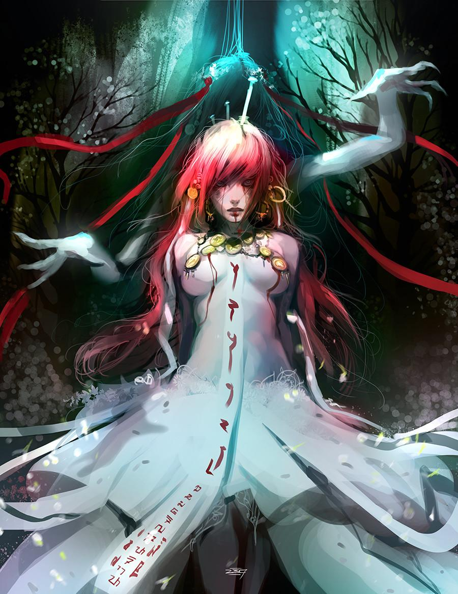
If no resolution was reached because each investigator was defeated: Read Resolution 4.
Resolution 1: Check the Campaign Guide, then proceed to the relevant section below:
If Mayu is searching for Miyu alone or Mayu is with you
until the very end, skip to Epilogue V: The Keepers of
the Covenant.
If the investigators made a promise to Mayu, skip
to Epilogue IV: The Maidens of Minakami.
Otherwise, skip to Epilogue III: Together, Forever.
Resolution 2: Check the Campaign Guide, then proceed to the relevant section below:
If the investigators made a promise to Mayu or Mayu is
with you until the very end, skip to Epilogue IV: The
Maidens of Minakami.
Otherwise, skip to Epilogue III: Together, Forever.
Resolution 3: Check the Campaign Guide, then proceed to the relevant section below:
If the investigators made a promise to Mayu or Mayu is
with you until the very end or Mayu is searching for Miyu
alone, skip to Epilogue II: Promises Broken.
Otherwise, proceed to Epilogue I: The Ghosts of
Onigawa.
Resolution 4:
Proceed to Epilogue I: The Ghosts of Onigawa.
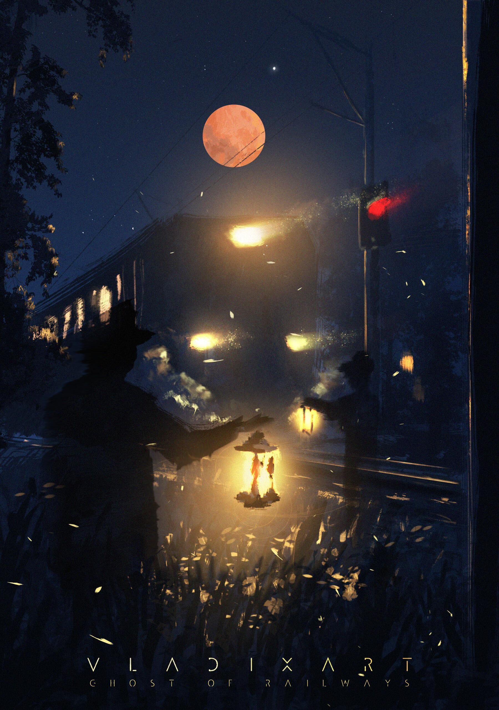
Epilogue I: The Ghosts of Onigawa
You awaken with a start.
As the muffled grinding of wheels on steel track lulls you back to reality, you watch, dumbly, as the pastoral countryside slides by your window. The scene is lit by an orange moon---which you find to be perfectly normal-sized---hanging in the night sky.
Your temple throbs; you've had nightmares before, but this... This was something else entirely. You wipe the sweat from your brow; maybe you're in much more dire need of this vacation than you first thought...
The passenger car enters a fog bank and the image outside your window turns flat and grey. It is then that you notice that the cabin you're occupying---besides your luggage and your person---is completely empty. You attempt to steady your own nerves with some token reassurance; perhaps the other passengers already disembarked while you slept, you think. Perhaps you simply missed your stop....
When the train eventually emerges from the foggy nimbus, your view does not return to natural moonlit splendor, as you had expected. Now, the image on the other side of the glass is murky and distorted, as if being viewed from underwater, and you notice your window is now covered in dark smears of some unknown substance. As always, your curiosity gets the better of you, and you run your finger through one of the smudges, rolling the material around in your fingertips to get a better sense of it, but you can't quite place it. Wax...?
When you look back to the window, the smudges you saw are gone. Or rather, they've coalesced, somehow drawing together to take on some altogether new shape. You recognize it immediately, and draw back in fright.
A second handprint, then a third, and a fourth appear, in a jagged vector, across the surface of the glass. You anxiously stumble out into the aisle of the passenger car, tripping on the edges of your own luggage concealed beneath your seat.
When you rise from the floor...it is not of your own will. Your legs kick at the air while you struggle against the phantom tightness lifting you up by your throat. The last thing you see are a series of inky apparitions appearing in the grass outside your window...
In your Campaign Log, record the ghosts of Onigawa have
been unleashed upon our world.
Each investigator is driven insane.
The investigators lose the campaign.

Epilogue II: Promises Broken
When you awake, you are immediately overcome with the sensation of drowning. In a primal panic, you desperately kick and flail, clawing yourself towards the dim light overhead until at last you break the surface and begin to cough up mouthfuls of pond scum. It's not until you manage pull yourself out of the water and onto solid ground that you realize you are in the forest outside Minakami, by the reflecting pool in the grotto. You glance at the shrines and immediately notice that the one which received your offering has crumbled into dust. In a daze, you wander out of the grotto just in time to see the torii gate in the heart of the forest, the one which had started you on your journey to Onigawa, collapse into a heap of splinters and rotten wood; never again shall its portal draw innocent people to that accursed place. You suspect you have the Guardians to thank for that...
You glance the other way, toward the forest threshold, and, to your surprise, Mayu is there, an anticipatory look of surprise, dread, and hope etched across her soft features. There are no words, so you shake your head sadly and look away. You can't bear to see her reaction to the knowledge that her precious sister is gone forever, but the sound of Mayu's knees hitting the earth pierces the tranquil grotto. She trusted you..and you failed her; you know you will never forget her anguished cries or the sounds of her tiny fists hitting the mud for as long as you live...
You decide the kind thing to do would be to take Mayu with you back to Arkham; there's nothing for her here but bad memories. She does well in school, though her teachers often complain that she is too talkative in class; she's "too old" to have an imaginary friend, they say. You know you can't make them understand what Mayu has been through, so you decide to just let it go.
She probably just needs more time...
In your Campaign Log, record the Guardians sealed the
gateway to Onigawa.
If any investigator's deck contains any of the following story
assets, they must exile them: Shishio's Guile, Bloodstained
Almanac, Queen Kaoru, Tsurugi's Might, Midori's
Cunning, The Pantheon's Contingency, Camera Obscura.
In your Campaign Log, record the investigators brought
Mayu Tachibana and the Camera Obscura to Arkham.
Each investigator must add one copy of the Memories of
Miyu story weakness included in the Memories of Miyu
encounter set to their deck. It does not count towards your
deck size.
Each investigator earns 10 additional experience for
surviving their encounters with the ghosts of Onigawa.
Each investigator suffers 1 mental and 1 physical trauma as
they will never fully recover from their time spent in the
twilight of Onigawa.
The investigators win the campaign...or do they?
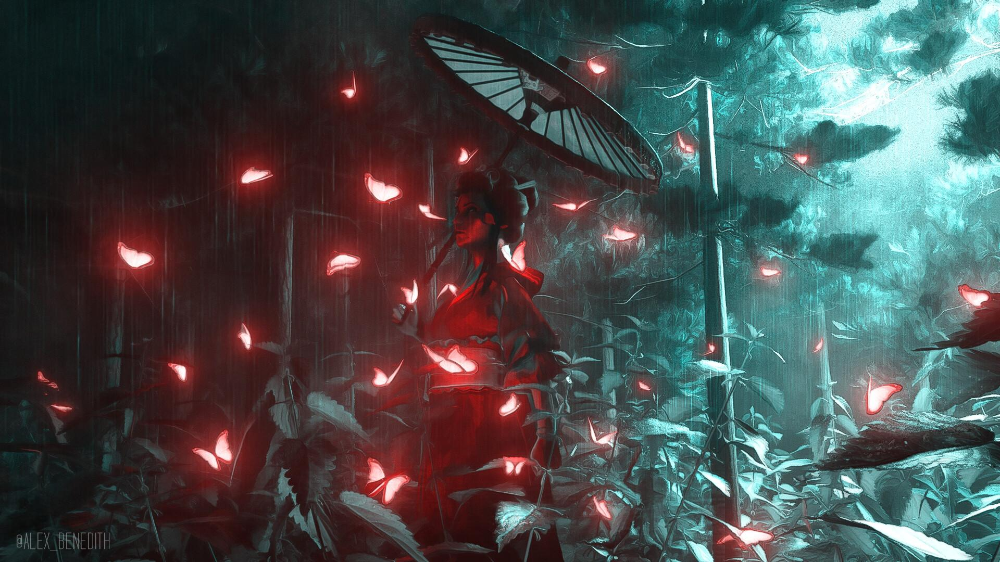
Epilogue III: Together, Forever
After passing through the starry expanse of the Torii gate for what feels like forever, you at last emerge in the heart of the forest outside of Minakami Village. It's been so long since you've seen daylight that it takes a moment for your eyes to adjust to the midday light. Behind you, a groaning creak, like falling timber, sounds, and you instinctively throw yourself, and the tiny girl accompanying you, to the ground, shielding her with your torso just as the torii gate behind you collapses into a pile of splinters and rotten wood. Never again shall its portal draw innocent people to that accursed place; you suspect you have the Guardians to thank for that. As you help Miyu to her feet, you notice the red runes on her forearms glowing faintly. "Who are you...?" she asks, in a daze, "Where is Mayu...?" A lump forms in your throat; at first, all you can think to tell Miyu is that her sister loved her...very, very much. You end up sitting with Miyu in the forest for what feels like hours while you attempt to explain everything that's happened since you arrived in Minakami. Miyu seems completely credulous of the tale and largely unfazed by it...at least, until you mention Mayu.
"But... She promised..." Miyu's shaky voice interrupts, "She promised we'd be together forever..."
The two of you return to Minakami in silence. Torrential rainfall pouring down upon the hamlet masks your return, and when you awaken the next day, Miyu is gone. You decide to visit Takeshi's grave one last time, since you will almost certainly never elect to return to this place once you've departed. The rain makes muddy work of your hike back to the lonely cairn, and, in the end, there was less to say to your friend than you thought there might be. As you return to the beaten path, you catch a glimpse of something moving among the trees. Your knees give out when you realize it's Miyu's cold body dangling from a branch overhead, suspended by a length of fraying rope.... After all you went through...how could she? Despondent and drenched, you linger there just long enough to witness a familiar red light emerging from Miyu's breast...
In your Campaign Log, record the Guardians sealed the
gateway to Onigawa.
If any investigator's deck contains any of the following story
assets, they must exile them: Shishio's Guile, Bloodstained
Almanac, Queen Kaoru, Tsurugi's Might, Midori's
Cunning, The Pantheon's Contingency, Camera Obscura.
Each investigator must add 1 copy of the Memories of
Miyu story weakness included in the Memories of Miyu
encounter set to their deck. It does not count towards their
deck size.
Each investigator earns 10 additional experience for
surviving their encounters with the ghosts of Onigawa.
Each investigator suffers 1 mental and 1 physical trauma as
they will never fully recover from their time spent in the
twilight of Onigawa.
The investigators win the campaign...or do they?
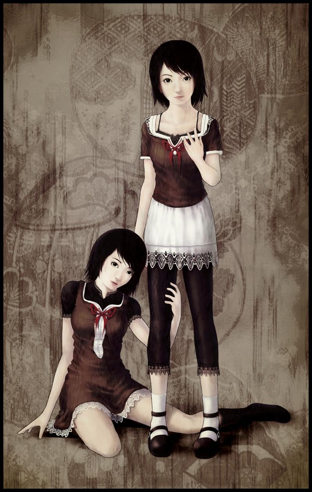
Epilogue IV: The Maidens of Minakami
After passing through that starry expanse for what feels like forever, you at last emerge in the heart of the forest outside of Minakami Village. It's been so long since you've seen daylight that it takes a moment for your eyes to adjust to the midday light.
Eventually, you become aware of delicate fingers gripping each of your hands; Mayu clings desperately to one arm, and Miyu barely manages to hold onto the other. You notice the red runes marking Miyu's forearms have vanished; all told, the twins seem no worse for wear...
Behind you, a groaning creak, like falling timber, sounds, and you instinctively push the girls to the ground, shielding them with your torso just as the torii gate behind you collapses into a pile of splinters and rotten wood. Never again shall its portal draw innocent people to that accursed place; you suspect you have the Guardians to thank for that...
Together, the three of you return to Minakami Village. You offer to bring them with you back to Arkham, but the twins decline; they've decided to remain in Minakami together, to tend the forest and rebuild its shrines, and, hopefully, make sure no one else ever has to go through what they did. You admire their courage, and decide to leave the Camera Obscura in their care...just in case.
While you pack your things and prepare to depart Takeshi's residence, the twins implore you to visit whenever you can, promising to cook for you and to show you around the nearby hot springs. Their offer is sweet, but you doubt you will ever take them up on it. Then again, someone has to watch out for these girls...
The next day, Miyu and Mayu escort you back to the station and bid you a teary and thankful farewell. As you board the train, Mayu plants a chaste kiss upon your cheek. When the train departs the station, the twins race along side it, waving and shouting their goodbyes. You watch them fondly until they vanish into the horizon...
In your Campaign Log, record the Guardians sealed the
gateway to Onigawa.
If any investigator's deck contains any of the following story
assets, they must exile them: Shishio's Guile, Bloodstained
Almanac, Queen Kaoru, Tsurugi's Might, Midori's
Cunning, The Pantheon's Contingency, Camera Obscura.
In your Campaign Log, record the twins remained in
Minakami Village with the Camera Obscura.
Each investigator earns 10 additional experience for
surviving their encounters with the ghosts of Onigawa.
Each investigator suffers 1 mental and 1 physical trauma as
they will never fully recover from their time spent in the
twilight of Onigawa.
The investigators win the campaign!
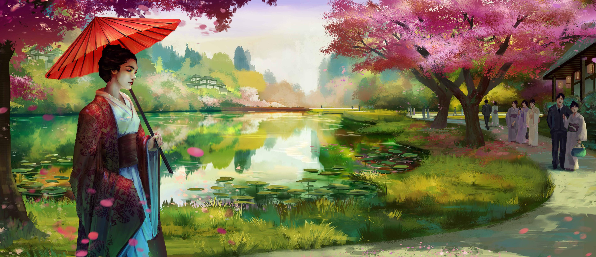
Epilogue V: The Keepers of the Covenant
When you release your breath, you find yourself standing in the middle of a bustling marketplace. Amidst the teeming masses of people, wagons of produce and raw materials are carried up and down the boulevard, and the stench of livestock hangs heavy in the air. It isn't until you look up, and see the enormous cherry blossom tree blooming beneath the massive archway, and the palace behind it, that you realize where you are.
"Miyu!" a familiar voice moves you from your reverie. You scan the plaza and spot the twins sharing a tearful embrace near the edge of the temple. You race to their side, and Mayu embraces you, as well. She's unable to formulate any coherent speech, but you can sense her deep gratitude. Miyu just shyly watches you; after all, you haven't been formally introduced yet.
The three of you shuffle off the main street to try to find some privacy behind the temple, but, when you pass by it, your attention is drawn to the standing stone. You see a man kneeling before it, hands clasped in prayer. Something about him is familiar to you, but you can't place it until you catch his gaze, and a cheshire grin installs itself upon his swollen face: Takeshi. You embrace your old friend and laugh. Words seem insufficient, but you attempt to recount the details of your journey as best you can. When you get to the events of the shattered cathedral, you find yourself at a loss for words...
"You have restored the balance, champion." An imperious voice rings out in your mind. You look back to the standing stone, searching for the source of the voice. A large peacock sits regally perched on top of the standing stone; its brilliant plumage sparkling in the light of the midday sun. "...and, in so doing, rewound our fate," the creature continues. Of course, you recognize the creature immediately. His prison upon Mount Kokoro did not suit him at all, you think, because the last time you saw Kanon, the impetuous prince of the pantheon, he did not look anywhere close to being this handsome.
He flits his head back and forth as he speaks to you. "I thank you---all of you---for what you have done. Moloch's influence once lead our people to ruin, and would do so again...given the opportunity. Therefore..." A pregnant silence follows. "...I must ask you and your companions to remain here, and watch over my people. It is the only way to spare your own world from Moloch's inevitable reprisal; the Covenant here must endure."
As the gravity of Kanon's proclamation sinks in, you realize it is no mere request; you will find no passage back to Minakami Village no matter how hard you look. You exchange meaningful glances with Takeshi and the twins; they don't seem particularly perturbed by the idea. The girls are just happy to be reunited, and Takeshi... Well, you imagine he's just happy to be alive.
You take a deep breath as you try to imagine growing old in this beautiful place; absorbing its majestic splendor, investigating its mysteries...and you think it might be nice. Especially since you have friends in very high places. Perhaps this vacation may yet be salvaged, or, even better, converted into an early retirement...
In your Campaign Log, record the Covenant was honored
and Onigawa was restored.
Your world is spared Moloch's terrible vengeance, and the
investigators win the campaign...
...but the investigators must forever remain in Onigawa to
ensure the Covenant remains intact. These investigators
cannot be transferred to a different campaign. (You must
start fresh.)
A Word from the Design Team
Greetings, investigator!
It's Myriad from Arkham.cards, Lead Designer of The Ghosts of Onigawa cycle. If you're reading this, then you probably just completed The Ghosts of Onigawa campaign. If so, thank you so much for spending your precious time checking out our work. I hope you enjoyed it!
Onigawa is the first piece of custom Arkham content I have ever released, and in many ways, it was the thing that taught me how to design Arkham cards, or, perhaps more importantly, how not to design them.
During this project's inception, my original vision for Onigawa was very humble; I simply wanted to tell a story about some little girls who get lost in a spooky mansion and take pictures of ghosts, in a loving homage to the Fatal Frame series of survival horror games. It was probably just enough content to make a really neat standalone scenario, but as I sat down and started to write, I realized I wanted more time to flesh out the story and build a world that was worthy of the Arkham Horror name. The first two scenarios were prototyped very quickly but after that I was worried there just wasn't enough content to "stretch things" out for a full campaign-sized experience.
Fortunately, one other thing that working on Onigawa taught me was how crucial the work of concept artists is. I spent a lot of time looking at fantasy artwork over the course of Onigawa's development, and many of the design and plot concepts you see in Onigawa were completely inspired by the artists whose work I reviewed. My tiny story about a haunted mansion grew into a sprawling "original" pseudo-medieval fantasy setting without me even having to try very hard because merely by engaging with the work of the fantasy artists featured in this cycle I was left with more ideas than I knew what to do with---an embarrassment of riches, to be sure---and in the end, I ended spending about six months trying to come up with a compelling back story for this fictional fallen civilization I fell in love with, only to discover there wasn't really room in the "A-plot" of the campaign to delve that deeply into its history. C'est la vie.
While I have come to love The Ghosts of Onigawa, in the way that a parent still loves their idiot children, I do think that, in the end, I ended up splitting the difference in a way that wasn't quite as satisfying as I hoped and failed to do real justice to either the "spooky ghost mansion" or "forlorn samurai fantasy realm" concept, but Onigawa is still a very special place for me and the endless possibilities that shine through its creation (and destruction) still haunt me, in a way. I hope someday we might be able to more fully Return to Onigawa and see what it might have looked like during the golden age which preceded its fall, and in so doing, that I might also be given a chance to "set the wrong things right."
---Myriad
Credits and Acknowledgements
Most importantly, I would like thanks all the wonderful artists whose work I shamelessly plundered to decorate these cards. You should check out all of their work (and support them if you can), but, in particular, these artists strongly influenced the Onigawa design and presentation in a way that deserves special recognition:
Gu Zheng WeiHou China Arthur Yuan
Many, many thanks to all the community members and playtesters who generously shared their feedback and encouragement during the design process, including (but not limited to):
ggyppt Stratos
Gold Chertref
TheRTist Hauke
dicegodsBen D.
Eternal thanks to the developers of SCE and Strange Eons (and their dependencies); both for their labors as well as their support, these are two tools The Ghosts of Onigawa literally could not have been made without.
Thanks to the fine folks at Fantasy Flight Games for doing such a superb job of supporting this wonderful game that we all love so much. And, of course, thanks to the Arkham Horror LCG community at large, both for their endless creativity which never ceases to inspire and for their boundless support which has made this project a joy to complete (and share).
Even Living Card Games May Die
Last, but certainly not least, thank you to all of the
Arkham.cards Patreon supporters---without you, it would be nearly impossible to justify spending as much time as we do on our releases, and we hope this one lives up to your expectations.
We're honored and privileged to serve your tabletop needs, and we're already hard at work on the next cycle. We hope to see you there. Until then, may the chaos bag be kind to you!
In Memory of Myriad (1989--2024)
This campaign was designed and written by Myriad, known to many in the community.
A Portland native and lifelong gamer, Myriad spent his career in IT. This field suited his natural desire to help others and solve problems. He brought that same helpful spirit to the Arkham community, where he was always available to assist new players and content creators with his knowledge.
Myriad was known for his humor and his high standards for quality. He spent countless hours on the small details of his content to ensure it would be a great experience for everyone who played it. This project stands as a final example of his kindness and his dedication to the hobby.
Thank you for playing.
Astral Armaments The Black Harvest
Cruel Corvids Cursed Conductors
Darkened Manor Deadly Doctrines
Downwell The End of August
Fearsome Fog Fiery Fate
Forest Frights Forged In Flames
Ghostly Grudges Gifts Ungiven
Guardians of Minakami Half Light
Handy Horrors The Hidden Village
The House on the Hill Lunar Lunacy
Memories of Mayu Memories of Miyu
The Molten Armory Moonlit Madness
The River Delta The Shepherd's Flock
Siege of Onigawa Slumbering Serpents
Sunken Kingdom Tidal Terrors
The War Eternal Watery Woes
Winds of Winter
From Return to Ghosts of Onigawa:
Guardians of Minakami
Mayu Tachibana ............................................................. 2
Frost Tokens ................................................................... 3
Bless, Curse, and Harmony Tokens ........................... 3
Damaging Permanents .................................................. 3
Haunted ........................................................................... 3
Advantage keyword ........................................................ 3
Alert keyword ................................................................... 3
Ambush keyword ............................................................ 3
Hunter X keyword .......................................................... 3
Patrol keyword ................................................................ 3
Protected keyword .......................................................... 3
Revenge keyword ............................................................ 4
Rally Deck (in The War Eternal) ................................ 18
Frost Tokens (in The End of August) ........................ 24
Sacrifice Deck (in The Black Harvest) ....................... 36
Harmony Tokens (in The Black Harvest) ................ 36